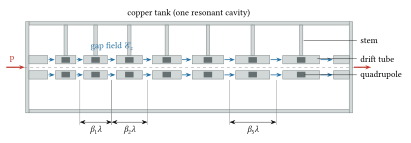
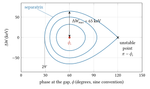
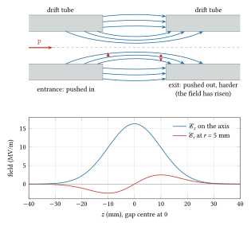
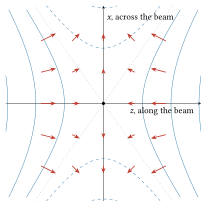
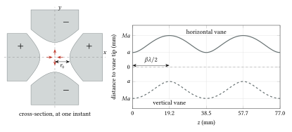
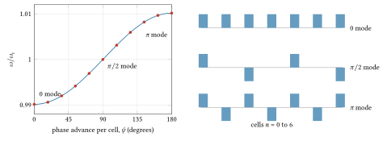
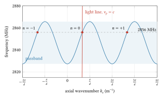
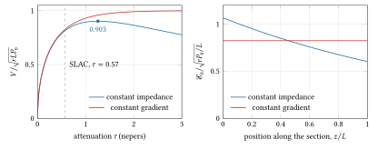

14 Linear accelerators
1946 to today: Alvarez’s drift-tube linac at Berkeley, Hansen’s Mark I to Mark III at Stanford, the SLAC two-mile linac, LAMPF, the RFQ, CEBAF, SNS, the European XFEL and ESS; the wall is that a resonant gap must be crossed in step thousands of times without the beam spreading sideways or out of phase.
Pre-requisites for this chapter.
From Part 0:
- F1 Calculus: derivatives and the rules for them (the chain rule for \(d\gamma/d\beta\), section 3), the exponential and the logarithm (the power dying along a travelling-wave section, section 7), small changes and maxima (the arrival-time shift, section 3; the best attenuation, section 7), integrals (the impulse of a gap, section 4; the energy of a section, section 7), Taylor series (\(\sin\phi \approx \sin\phi_s + \cos\phi_s\,\Delta\phi\) and \(\cos\mu \approx 1 - \mu^2/2\)), partial derivatives (fields that depend on \(r\), \(z\) and \(t\), and the derivative along the particle’s path, section 4) and first differential equations (\(dP/dz = -2\alpha P\), section 7).
- F2 Vectors: the cross product (the magnetic force, section 4), flux, divergence and Gauss’s theorem, curl and Stokes’s theorem (the integral laws before section 4), the Laplacian (Earnshaw’s theorem) and cylindrical coordinates (the RFQ potential).
- F3 Mechanics: potential energy and equilibrium (Earnshaw’s theorem), simple harmonic motion (phase oscillations, section 3), driven oscillation (beam break-up, section 8), frames of reference (the rest frame of the bunch, section 4) and the Hamiltonian (the bucket, section 3).
- F4 Electricity and magnetism: Gauss’s law, potential and the electron-volt, capacitance (the drift tubes lower the frequency, section 1), the magnetic force (quadrupoles), the displacement current and Maxwell’s four equations (the field near the axis of a gap) and the Poynting vector (power flow, section 7).
- F5 Oscillations and waves: complex numbers and Euler’s formula (Floquet’s phase factor), the damped oscillator and its Q (wall loss, sections 7 and 9), coupled oscillators and normal modes (section 6), standing waves, phase and group velocity (sections 6 and 7) and Fourier’s idea (space harmonics).
- F6 Heat and probability: mean, variance and standard deviation (rms errors of the cells, section 6).
- F7 Atoms and quanta: the electron-volt and mass and energy (\(mc^2\) of the proton and electron, \(\gamma\) and \(\beta\) from the kinetic energy).
From the chapters, taught here or earlier:
- Resonant cavity modes: the pillbox TM\(_{010}\) mode and the 0 and \(\pi\) modes of a chain of cells, for the drift-tube tank (section 1); the frequency \(2.405c/(2\pi R_c)\) and the bead pull are worked out in chapter 13.
- Special functions and integrals: \(J_0\) and its first zero 2.405 (section 1), and the modified Bessel function \(I_0\) (section 5).
- RLC circuits and phasors: resonance at \(1/\sqrt{LC}\), so the drift tubes’ capacitance lowers the tank’s frequency (section 1), and the resonator as a circuit, whose shunt impedance is half the linac definition (sections 7 and 9).
- Simple and damped harmonic oscillator: small phase oscillations with wavenumber \(k_l\) and their ellipse (section 3).
- Lagrangian and Hamiltonian mechanics: the two equations of phase motion from \(H(\phi, \Delta W)\) with \(s\) as time (section 3).
- The pendulum, nonlinear oscillation and the separatrix: fixed points, the separatrix and the bucket height (section 3).
- Phase space and Liouville’s theorem: the area of a phase ellipse and the normalised emittance (section 3).
- Adiabatic invariants: the phase-space area kept while \(\beta\gamma\) rises slowly, giving \(\Delta\phi_{max} \propto (\beta\gamma)^{-3/4}\) (section 3).
- Maxwell’s equations, continued: Gauss’s law and the Ampère-Maxwell law in integral form, and the radial fields \(\mathcal{E}_r\) and \(B_\theta\) near the axis of a gap (section 4); it builds on chapter 13.
- Laplace and Poisson equations: Laplace’s equation in the empty beam region, and uniqueness (sections 4 and 5).
- Earnshaw’s theorem: no static field holds a charge in all three directions, and with cylindrical symmetry each transverse plane gets minus half the longitudinal stiffness (section 4).
- Lorentz transformations: the synchronous particle’s rest frame, and the bunch looking \(\gamma\) times longer there (section 4).
- Relativistic motion in electric and magnetic fields: the radial Lorentz force \(q(\mathcal{E}_r - vB_\theta)\), an angle as impulse over momentum (section 4), and the spectrometer at the bench.
- Two-dimensional potentials and multipoles, continued: magnetic and electric quadrupoles, and why the electric one is stronger for slow ions (sections 4 and 5); it builds on chapter 7.
- Linear systems and transfer matrices, continued: a row of thin lenses smoothed into a continuous \(k^2 = 1/(fL)\) (sections 4 and 5); it builds on chapter 8.
- Parametric resonance, Hill and Mathieu equations: net focusing by a rapidly oscillating force, Landau and Lifshitz’s effective potential and its condition \(\Omega \ll \omega_{RF}\) (section 5).
- Partial differential equations and separation of variables: Laplace’s equation in cylindrical coordinates, the terms \(r^n\cos n\theta\) and \(I_0(kr)\cos kz\), and fitting them to the RFQ vanes (section 5).
- Floquet theory, continued: the phase advance per period (section 5), and fields that repeat from cell to cell up to a phase, space harmonics and the dispersion curve (section 7); it builds on chapter 12.
- Coupled oscillators and normal modes: a chain of \(N+1\) cells, its modes and passband (section 6).
- Matrices, determinants, eigenvalues, continued: normal modes as eigenvectors, and perturbation theory for tuning errors in first and second order (section 6); it builds on chapter 8.
- Driven oscillator, resonance and quality factor: \(Q_0\), the loaded \(Q_L\), bandwidth and fill time (sections 7 and 9).
- Poynting’s theorem, energy and power flow: the energy balance of a travelling-wave section, wall loss and beam taking power from the flow (section 7).
- Waveguides, continued: the round pipe’s phase velocity above \(c\), phase and group velocity, and power flow \(P = v_gw\) (section 7); it builds on chapter 13.
- Ordinary differential equations, continued: a drive exactly at resonance growing as \(s\sin ks\), and a detuned response that stays bounded, for beam break-up and BNS damping (section 8); the \(\cosh\) growth of section 4 and the decay \(dP/dz = -2\alpha P\) of section 7 are in chapter 2.
- Fields in conductors, skin depth, surface resistance: wall loss from surface resistance, and copper against niobium (section 9).
- Superconductivity basics: niobium at 2 K and the superheating field that limits the gradient (section 9 and where it stops).
- Transmission lines, matching, S-parameters: quarter-wave and half-wave resonators (section 9), and waveguide loss in decibels (section 7).
In one page
The wall. By 1945 the cyclotron was held back by relativity (chapter 10) and circular electron machines by radiation (chapter 11). Wideroe’s drift tubes at 10 MHz (chapter 9) would need tubes metres long for protons of a few tens of MeV. A straight machine needed a frequency some twenty times higher, megawatts of RF power at that frequency, a way to keep the particles in phase over hundreds of gaps, and a way to stop the RF field itself from pushing them sideways into the walls.
The idea. Put the drift tubes inside one long resonant cavity driven at about 200 MHz, the frequency of wartime radar tubes (Alvarez, Berkeley, first beam 1947). All gaps then oscillate in phase, and each cell is \(\beta\lambda\) long. Phase stability bunches the beam about a synchronous phase; quadrupoles in the drift tubes (after 1952) hold it transversely. For electrons, which travel at nearly \(c\) above a few MeV, use a travelling wave in a disc-loaded waveguide whose phase velocity is \(c\) (Hansen, Stanford, 1947). At the low-velocity end, the RFQ (Kapchinskij and Teplyakov, 1970) focuses, bunches and accelerates with electric fields alone. Superconducting cavities now give tens of MV/m continuously.
Equations to remember. With \(\lambda = c/f_{RF}\) (m), \(\mathcal{E}_0\) the average axial field of a cell (V/m), \(T_t\) the transit-time factor, \(L\) the cell length (m), \(\phi\) the RF phase at crossing (sine convention):
\[ \begin{aligned} L &= \beta\lambda \ (\text{0 mode}), \qquad \Delta W = qE_0T_tL\sin\phi \\ k_l^2 &= \frac{2\pi qE_0T_t\cos\phi_s}{mc^2\lambda\beta^3\gamma^3}, \qquad k_{rf}^2 = -\tfrac{1}{2}k_l^2 \\ \Delta\phi_{max} &\propto (\beta\gamma)^{-3/4}, \qquad \varepsilon \propto (\beta\gamma)^{-1} \\ V &= \sqrt{r L P_0\,(1-e^{-2\tau})} - \frac{i r L}{2}\left(1-\frac{2\tau e^{-2\tau}}{1-e^{-2\tau}}\right) \\ t_F &= \frac{2\tau Q_0}{\omega_{RF}} \end{aligned} \]
Here \(k_l\) and \(k_{rf}\) (m\(^{-1}\)) are the longitudinal and RF-defocusing wavenumbers; the last two lines are the energy gain \(V\) (V) of a constant-gradient travelling-wave section of length \(L\) with input power \(P_0\) (W), shunt impedance per metre \(r\) (Ω/m), attenuation \(\tau\) (nepers) and beam current \(i\) (A), and its filling time \(t_F\).
Numbers worth knowing. Alvarez 1947: 4 to 31.5 MeV protons, 202.5 MHz, 40 ft (12.2 m), 46 drift tubes, 2.1 MW peak. Mark I (first electrons 1947): eventually 6 MeV, 12 ft. SLAC 1966: 10,000 ft, 960 sections, 2856 MHz, 20.16 GeV in January 1967. LAMPF 1972: 800 MeV, 201.25 MHz then 805 MHz side-coupled. RFQ test at Los Alamos, February 1980, 425 MHz. TESLA cavity: 9 cells, 1.3 GHz, 1.038 m, 25 MV/m. European XFEL, first lasing May 2017: 17.5 GeV, 96 modules. Gradients: about 2 MV/m (Alvarez), about 7 MV/m unloaded (SLAC 1966), 23.6 MV/m (XFEL specification), 100 MV/m (X-band tests).
The wall
Three ways that did not go further
Three kinds of machine stood at the end of the war, and each had a ceiling. The cyclotron’s ions fall out of step as their mass rises with energy; for protons this ends the fixed-frequency machine at some tens of MeV (chapter 10, chapter 12). Electrostatic machines held a few megavolts (chapter 6). Electrons on a circle radiate, and the betatron’s reach ended near a few hundred MeV (chapter 11).
A straight machine has none of these limits. Its particles do not turn, so they do not radiate; its voltage is never held in one place, so nothing breaks down at the full energy; and its timing is set by geometry cell by cell, so relativity only changes the cell lengths. The price is length, and the length is set by the energy gain per metre.
Why Wideroe’s tubes could not be scaled for protons
Sloan and Lawrence had accelerated mercury ions to 1.26 MeV in 1931 with 30 tubes at about 10 MHz (chapter 9). In that structure each tube is half a period long, \(\beta\lambda/2\). A 31.5 MeV proton has \(\beta = 0.253\). At 10 MHz (\(\lambda\) = 30 m) its last tube would be 3.79 m long, and the whole machine, given the same 47 gaps as Alvarez’s tank below, would be about 130 m long. The open array of tubes also acts as a capacitor that must be charged and discharged every cycle, and as an antenna; the power goes into charging currents and radiation, not into the beam. To make the machine short the frequency had to rise by a factor of twenty or so, and at hundreds of MHz an open array of electrodes is useless: the structure has to be a closed resonator.
What the war provided
The war built megawatt pulsed sources at hundreds of MHz and at 3 GHz for radar. Lapostolle’s history says Alvarez chose 200 MHz “because of the availability of radar amplifier tubes” (Lapostolle 1989, chapter 1, section 2). Luis Alvarez had worked on radar at the MIT Radiation Laboratory and then at Los Alamos, and in 1945 he led a team at Berkeley, Wolfgang Panofsky among them, that began the first proton linac of this kind. At Stanford, William Hansen had invented the rhumbatron resonator that the Varian brothers used in the klystron, which they demonstrated on 30 August 1937; after the war he turned the klystron and the magnetron to driving electrons down a loaded waveguide.
The second wall: the field itself defocuses
The first designs met a deeper obstacle, which is the subject of section 4 below. A gap that holds particles in phase must have its field rising while they cross. A rising field pushes them outward, and no arrangement of static or RF electric fields in empty space can avoid that. The first remedy tried at Berkeley was to close the exit hole of each drift tube with a thin foil, so that the outward-pointing field lines at the exit vanished. Lapostolle records that the test failed because the electrical breakdowns that occur while a cavity is conditioned destroyed the foils. Grids of wires replaced the foils; they focused, at the cost of the particles that hit the wires.
The physics
A note on symbols. The electric field is written \(\mathcal{E}\), as everywhere in the course, and \(E\) is kept for energy: \(\mathcal{E}_z\) and \(\mathcal{E}_r\) are field components, and \(\mathcal{E}_0\) (V/m) is the average axial field over a cell, the standard linac quantity. The transit-time factor \(T_t\) is the one defined in chapter 9.
1. The drift-tube linac: one cavity, all gaps in phase
The picture. Start with a pillbox cavity, a closed copper cylinder, oscillating in its lowest mode, TM\(_{010}\). (The name, from the pre-requisite on cavity modes: TM, “transverse magnetic”, means the magnetic field has no component along the axis; the digits 0, 1, 0 say that the field does not change round the axis, that going out from the axis it falls once to zero, which it reaches at the wall, and that it does not change along the axis.) Its electric field is axial, uniform along the axis, and largest on the axis; its magnetic field circles the axis. Make the cylinder long. The field is the same along its whole length and changes sign every half period. A particle travelling along the axis would gain energy for half a period and lose it for the next. Now hang a row of hollow copper tubes, the drift tubes, on stems along the axis. The field concentrates in the gaps between them, and inside each tube it is nearly zero. The particle hides inside a tube while the field points the wrong way.
The geometry. Because the whole tank is one mode, every gap has the same phase at a given instant. This is called the 0 mode: the phase difference between neighbouring gaps is zero. A particle must therefore take one whole RF period, not half, to go from the middle of one gap to the middle of the next. The cell length is
\[ L_n = \beta_n\lambda , \]
with \(\beta_n c\) the particle’s speed in cell \(n\) and \(\lambda = c/f_{RF}\) the free-space wavelength. Compare Wideroe’s structure, in which neighbouring gaps are in opposite phase (a \(\pi\) mode) and \(L_n = \beta_n\lambda/2\). The 0 mode has a physical reason behind it: the surface currents on the two faces of an imaginary wall between cells, at the middle of a drift tube, would be equal and opposite, so the wall carries no net current and can be removed. The cells share one volume and one stored energy, and are driven together.

Figure 14.1. A drift-tube linac in section along its axis (not to scale: Alvarez’s tank was 12.2 m long and 0.99 m across, with 46 drift tubes). The whole tank is one cavity. At the instant drawn the field in every gap points along the beam (blue arrows), the 0 mode; half a period later every gap points backwards, and the protons are then hidden inside the tubes. The distance from one gap centre to the next is \(\beta\lambda\), so the cells grow as the protons speed up. The dark blocks inside the tubes are the focusing quadrupoles added after 1952 (section 4).
The drift tubes add capacitance across the gaps and lower the frequency of the tank below that of the empty pillbox. (A resonator behaves like an LC circuit, whose frequency is \(1/(2\pi\sqrt{LC})\) (F5, section 6): two metal faces close together across a short gap are a capacitor, and more \(C\) means a lower frequency.) For a pillbox of radius \(R_c\), the TM\(_{010}\) frequency is (derived in chapter 13)
\[ f_{010} = \frac{2.405\,c}{2\pi R_c}, \]
where 2.405 is the first zero of the Bessel function \(J_0\).
Worked numbers: Alvarez’s machine. The parameters are from Alvarez et al. (1955): injection at 4 MeV from a Van de Graaff, 31.5 MeV out, a tank 40 feet (12.19 m) long and 39 inches (0.99 m) in diameter, 202.5 MHz, 46 drift tubes, about 2.1 MW of peak RF from nine oscillators. Then \(\lambda\) = 1.480 m. At 4 MeV, \(\beta\) = 0.0920 and the first cell is 0.136 m; at 31.5 MeV, \(\beta\) = 0.253 and the last is 0.374 m. The average energy gain is 27.5 MeV over 12.19 m, 2.26 MV/m. If that gain per metre is constant, the number of cells is \(\int ds/(\beta\lambda)\) over the tank (a cell is \(\beta\lambda\) long, so a short length \(ds\) holds \(ds/(\beta\lambda)\) of a cell, with \(\beta\) found at each \(s\) from the energy reached there), which gives 47.4; 46 drift tubes make 47 gaps. An empty pillbox 0.99 m across would resonate at 232 MHz; the drift tubes bring it down to 202.5 MHz.
Why the field must be flat, and post couplers. In a long tank in the 0 mode the cells are coupled only weakly to each other through the shared magnetic field. A small error in the tuning of one region, a drift tube slightly long or a stem slightly displaced, tilts the field along the tank, and a beam designed for a flat field then loses phase. At Los Alamos in the 1960s, Swenson, Knapp, Potter and Schneider (1967) added rods, the post couplers, projecting from the tank wall towards the drift tubes. Each post is a resonator in its own right. Tuned so that the frequency of the post mode, the oscillation of the posts themselves, equals that of the accelerating mode (two modes at one frequency are said to be in confluence), the posts couple the gaps to one another, and the structure acquires the stability of the \(\pi/2\) mode described in section 6 while the accelerating field is still in the 0 mode. Lapostolle gives the resulting group velocity, the speed at which a disturbance of the field travels from one end of the tank to the other (F5, section 12; section 6 below), as about \(0.1c\); Wangler (2008, section 4.15) explains the same tuning, which brings the post mode into confluence with the accelerating mode, but gives no figure. The LAMPF drift-tube linac used them; Knapp reported in 1971 that the posts had been set in tank 3 “for field flatness and stability” and worked very well.
2. Energy gain per cell, and the two phase conventions
A particle crossing cell \(n\) with RF phase \(\phi\) gains
\[ \Delta W = qE_0T_tL\sin\phi , \]
where \(\mathcal{E}_0L\) is the voltage the field would give a particle if it were frozen in time, and \(T_t < 1\) accounts for the field changing while the particle crosses the gap (chapter 9, section 5). The phase \(\phi\) grows for later arrival. A particle that arrives late meets a larger field if the field is rising, gains more, speeds up, and catches up. So the synchronous phase \(\phi_s\), the phase at which the synchronous particle (the one that crosses every gap exactly as the cell lengths were designed for) arrives, must lie between \(0\) and \(\pi/2\), on the rising side of the wave. In ring language this is “below transition”. In a ring a particle with more energy goes faster but also round a longer orbit; at low energy the speed wins and it comes round sooner, at high energy the longer path wins and it comes round later, and the energy where the two balance is called transition (chapter 12). A linac has no orbit to lengthen, so a faster particle always arrives earlier: a linac is always below transition.
Most linac texts and laboratory logbooks write \(\Delta W = qE_0TL\cos\phi\) with the phase measured from the crest, so that the stable range is \(-90^\circ < \phi < 0\). The two are related by
\[ \phi_{\text{sine}} = \phi_{\text{cosine}} + 90^\circ . \]
A linac synchronous phase of \(-30^\circ\) is \(60^\circ\) here. The SNS superconducting cavities run at a design synchronous phase of typically \(-20^\circ\) in their convention (Henderson 2006), \(70^\circ\) here. The RFQ in section 5 starts at \(-90^\circ\), which is \(0\) here: no acceleration, pure bunching.
3. Longitudinal motion in outline
The full theory of phase motion is in chapter 19. Here is what a linac needs.
Small oscillations. Let \(\Delta\phi = \phi - \phi_s\) and \(\Delta W = W - W_s\) be a particle’s deviations from the synchronous particle, and let \(s\) be the distance along the linac. Smooth the gaps into a continuous gradient: a cell of length \(L\) gives \(qE_0T_tL\sin\phi\), so per metre the particle gains \(qE_0T_t\sin\phi\) and the synchronous particle \(qE_0T_t\sin\phi_s\). The energy deviation, the difference, changes as
\[ \frac{d\,\Delta W}{ds} = qE_0T_t(\sin\phi - \sin\phi_s) \approx qE_0T_t\cos\phi_s\,\Delta\phi . \]
The last step is the first term of a Taylor series (F1, section 8): near \(\phi_s\), \(\sin\phi \approx \sin\phi_s + \cos\phi_s\,(\phi - \phi_s)\).
The phase deviation changes because a particle with a different speed arrives at a different time. The time to travel \(ds\) is \(ds/v\). A particle faster by a small \(\Delta v\) takes, by the rule for small changes (F1, section 5), \(d(1/v)/dv = -1/v^2\) times \(\Delta v\) less time per metre, so its arrival time drifts by \(d(\Delta t) = -\Delta v\,ds/v^2\), and \(\Delta\phi = \omega_{RF}\Delta t\). To turn \(\Delta v\) into \(\Delta W\): the kinetic energy is \(W = (\gamma - 1)mc^2\), so \(dW = mc^2\,d\gamma\); and differentiating \(\gamma = (1 - \beta^2)^{-1/2}\) with the chain rule (F1, section 2),
\[ \frac{d\gamma}{d\beta} = -\tfrac{1}{2}(1 - \beta^2)^{-3/2}\times(-2\beta) = \beta\gamma^3 . \]
So \(\Delta W = mc^2\beta\gamma^3\,\Delta\beta\), and with \(\Delta v = c\,\Delta\beta\), \(\Delta v = c\,\Delta W/(mc^2\beta\gamma^3)\). Putting these together, \(d\,\Delta\phi/ds = -\omega_{RF}\Delta v/v^2\) with \(v = \beta c\) and \(\omega_{RF} = 2\pi c/\lambda\), and
\[ \frac{d\,\Delta\phi}{ds} = -\frac{2\pi}{\lambda\,mc^2\beta^3\gamma^3}\,\Delta W . \]
Differentiating the second equation with respect to \(s\) (holding \(\beta\) and \(\gamma\) fixed, since they change slowly) and inserting the first gives \(d^2\Delta\phi/ds^2 = -A\,qE_0T_t\cos\phi_s\,\Delta\phi\), with \(A = 2\pi/(\lambda mc^2\beta^3\gamma^3)\) the coefficient of the second equation. This is simple harmonic motion (F3, section 9) with distance in place of time, \(d^2\Delta\phi/ds^2 = -k_l^2\Delta\phi\), with
\[ k_l^2 = \frac{2\pi qE_0T_t\cos\phi_s}{mc^2\lambda\beta^3\gamma^3}. \]
The factor \(\beta^3\gamma^3\) is the longitudinal inertia: one power of \(\gamma\) from the mass, two more because a given energy change makes less and less difference to the speed. This approximation holds while \(\beta\) and \(\gamma\) change slowly over one oscillation and the phase excursion is small.
The bucket. For large phase deviations the linear approximation fails, and the full equations, \(d\phi/ds = -A\,\Delta W\) and \(d\,\Delta W/ds = qE_0T_t(\sin\phi - \sin\phi_s)\), come from the Hamiltonian (F3, section 12) \(H = -\tfrac{1}{2}A\,\Delta W^2 + qE_0T_t(\cos\phi + \phi\sin\phi_s)\), with \(s\) playing the part of time. Check: \(\partial H/\partial\Delta W = -A\,\Delta W\) is \(d\phi/ds\), and \(-\partial H/\partial\phi = qE_0T_t(\sin\phi - \sin\phi_s)\) is \(d\,\Delta W/ds\). Since \(H\) does not depend on \(s\) (with \(A\) and \(\mathcal{E}_0T_t\) held fixed), it is constant along each particle’s path, and each path is a curve of constant \(H\) in the \((\phi, \Delta W)\) plane. Fixed points, where both derivatives vanish, have \(\Delta W = 0\) and \(\sin\phi = \sin\phi_s\): \(\phi = \phi_s\), the stable centre, and \(\phi = \pi - \phi_s\), an unstable point like a pendulum balanced upside down (chapter 12). The trajectory through the unstable fixed point is the separatrix: it separates the closed paths around \(\phi_s\), the particles held in the bucket, from the open ones of particles that slip away. Its \(H\) is the value at \((\pi - \phi_s, 0)\),
\[ H_{sx} = qE_0T_t\big[\cos(\pi - \phi_s) + (\pi - \phi_s)\sin\phi_s\big] = qE_0T_t\big[-\cos\phi_s + (\pi - \phi_s)\sin\phi_s\big] . \]
At \(\phi = \phi_s\) the separatrix is furthest from the axis. Setting \(H(\phi_s, \Delta W_{max}) = H_{sx}\),
\[ -\tfrac{1}{2}A\,\Delta W_{max}^2 + qE_0T_t(\cos\phi_s + \phi_s\sin\phi_s) = qE_0T_t\big[-\cos\phi_s + (\pi - \phi_s)\sin\phi_s\big], \]
and collecting terms,
\[ \Delta W_{max}^2 = \frac{2qE_0T_t}{A}\Big[2\cos\phi_s - (\pi - 2\phi_s)\sin\phi_s\Big]. \]
The other end of the bucket is where the separatrix meets the axis again, \(\Delta W = 0\) and \(\cos\phi + \phi\sin\phi_s = -\cos\phi_s + (\pi - \phi_s)\sin\phi_s\); this has no formula for its root and is solved numerically. For \(\phi_s = 60^\circ\) the stable region runs from \(\phi = 29^\circ\) to \(120^\circ\): a width of \(91^\circ\), about three times the distance of \(\phi_s\) from the crest, which is the rule of thumb designers use. Figure 14.2 draws it with the numbers of LAMPF tank 1, worked out below.

Figure 14.2. The longitudinal bucket at the entrance of LAMPF tank 1 (0.75 MeV protons, 201.25 MHz, \(\mathcal{E}_0T_t\) = 1.59 MV/m, \(\phi_s = 60^\circ\)), computed from curves of constant \(H\). Particles inside the separatrix circle the synchronous phase (red dot) anticlockwise (a particle with extra energy, above the axis, arrives earlier, so its phase falls); the separatrix closes at \(29^\circ\) and at the unstable point \(120^\circ\), and is 65 keV high at \(\phi_s\). Small paths near the centre are ellipses; larger ones are pulled out towards the unstable point, where the restoring force is weak.
Adiabatic damping. As the beam accelerates, \(\beta^3\gamma^3\) grows slowly compared with the oscillation. The area of the ellipse traced by a particle in the \((\Delta\phi, \Delta W)\) plane is then an adiabatic invariant (Landau and Lifshitz, volume 1, section 49). The ellipse has semi-axes in the ratio \(\Delta W_{max}/\Delta\phi_{max} = \sqrt{qE_0T_t\cos\phi_s/A}\). (For small oscillations \(H \approx \text{const} - \tfrac{1}{2}A\,\Delta W^2 - \tfrac{1}{2}qE_0T_t\cos\phi_s\,\Delta\phi^2\), from the Taylor series of \(\cos\phi + \phi\sin\phi_s\) about \(\phi_s\) to second order. On a path of constant \(H\) the two squared terms trade off: at the top of the ellipse \(\Delta\phi = 0\) and all of it is in \(\tfrac{1}{2}A\,\Delta W_{max}^2\); at the side \(\Delta W = 0\) and all of it is in \(\tfrac{1}{2}qE_0T_t\cos\phi_s\,\Delta\phi_{max}^2\). Equating the two gives the ratio.) The area of an ellipse is \(\pi\) times the product of its semi-axes, \(\pi\,\Delta\phi_{max}\Delta W_{max}\). If that product is constant and the ratio is \(\rho = \Delta W_{max}/\Delta\phi_{max}\), then \(\Delta\phi_{max}^2 = (\text{product})/\rho\) and \(\Delta W_{max}^2 = (\text{product})\times\rho\). With constant \(\mathcal{E}_0T_t\), \(\rho \propto 1/\sqrt{A} \propto (\beta\gamma)^{3/2}\), so
\[ \Delta\phi_{max} \propto (\beta\gamma)^{-3/4}, \qquad \Delta W_{max} \propto (\beta\gamma)^{3/4}. \]
The bunch shrinks in phase as it gains energy. Transversely the same principle, conservation of the normalised emittance \(\varepsilon_n = \beta\gamma\varepsilon\), makes the geometric emittance fall as \(1/(\beta\gamma)\). (The geometric emittance \(\varepsilon\) is the area of the beam in the plane of offset \(x\) and slope \(x'\), divided by \(\pi\), chapter 7. The slope is transverse momentum over longitudinal momentum, \(x' = p_x/p\). Acceleration along \(z\) leaves \(p_x\) alone and raises \(p \propto \beta\gamma\), so every slope shrinks in proportion, and so does the area.)
Worked numbers: LAMPF tank 1. Swenson et al. (1971) give: 201.25 MHz, 11 ft (3.35 m), 31 drift tubes, 0.75 MeV in and 5.39 MeV out, design fields rising from 1.6 to 2.3 MV/m. The average energy gain is 1.38 MV/m. Taking \(\phi_s = 60^\circ\) (an assumption, the usual \(-30^\circ\)), \(\mathcal{E}_0T_t\) = 1.60 MV/m. At injection \(\beta\) = 0.0400, a cell is 59.5 mm long, and \(k_l\) gives one phase oscillation in 0.84 m, about 14 cells, \(25.6^\circ\) of oscillation phase per cell. The bucket half-height is 65 keV. At the exit, one oscillation takes 3.7 m. The product \(\beta\gamma\) grows by a factor 2.68 through the tank, so at constant \(\mathcal{E}_0T_t\) the phase width of the bunch is multiplied by \(2.68^{-3/4}\) = 0.48, and the transverse emittance falls by a factor 2.68. (Since \(\Delta\phi_{max} \propto (\mathcal{E}_0T_t)^{-1/4}(\beta\gamma)^{-3/4}\), the rise of the design field from 1.6 to 2.3 MV/m narrows the bunch by a further factor of about \((2.3/1.6)^{-1/4}\) = 0.91.) Swenson’s group measured exactly this: the output emittance was “quite consistent” with the input divided by an adiabatic damping factor of 2.7.
Pre-requisite (continued): Maxwell’s equations and the wave equation
Pre-requisite. Chapter 13 wrote Maxwell’s equations as differential equations at a point and turned them into the wave equation of a cavity. This section adds two of them in integral form, Gauss’s law over a closed surface and the Ampère-Maxwell law round a closed loop, and uses them to find the radial electric field and the circling magnetic field just off the axis of an accelerating gap from the axial field alone. Section 4 starts from these two results to compute the sideways push of a gap. Taught from Tong, Electromagnetism, sections 2.1 (Gauss’s law), 3.1 and 4.2 (Ampère’s law and the displacement current); Landau and Lifshitz, vol. 2, §30 (the integral forms); and Wangler, section 7.3.
Two laws for a finite surface and a finite loop. The differential laws say what happens at a point. Integrated over a region, they say what happens to a whole surface or loop, and in that form they can be applied to a small cylinder or circle drawn round the beam axis. In empty space, with no charge and no current, which is the space a beam crosses:
\[ \oint_S \boldsymbol{\mathcal{E}}\cdot d\mathbf{A} = 0, \qquad \oint_C \mathbf{B}\cdot d\mathbf{l} = \frac{1}{c^2}\,\frac{d}{dt}\int_A \boldsymbol{\mathcal{E}}\cdot d\mathbf{A}. \]
The first is Gauss’s law (chapter 1): the net flux of \(\boldsymbol{\mathcal{E}}\) (V/m) out of any closed surface \(S\) is zero when the surface encloses no charge, because \(\nabla\cdot\boldsymbol{\mathcal{E}} = 0\) at every point inside it. \(d\mathbf{A}\) (m\(^2\)) is a small piece of the surface, pointing outward. The second is the Ampère-Maxwell law: the circulation of \(\mathbf{B}\) (T) round a closed loop \(C\) equals \(1/c^2\) times the rate at which the electric flux through the loop changes. Here \(d\mathbf{l}\) (m) is a small step along the loop and \(A\) is any surface spanning it; \(1/c^2 = \mu_0\varepsilon_0\). The term on the right is Maxwell’s displacement current (F4, section 16); the step from the differential laws to these integral ones is Gauss’s and Stokes’s theorems (F2, section 10 and section 11). In a static machine it is absent; in an RF cavity, where no current flows on the axis, it is the only source of the magnetic field the beam meets. (With charge or current present, the right-hand sides gain \(Q/\varepsilon_0\) and \(\mu_0 I\).)
A check of units: the left of the second law is T m; the right is (m\(^2\)/s\(^2\))\(^{-1}\) times V/m times m\(^2\) per second, which is V s/m, and 1 T = 1 V s/m\(^2\). They agree.
The field near the axis of a gap. Take a structure with symmetry about the \(z\) axis: a pillbox, a row of drift tubes, a disc-loaded pipe. In its accelerating mode the field has three components, \(\mathcal{E}_z\), \(\mathcal{E}_r\) and \(B_\theta\), each a function of \(r\), \(z\) and \(t\) but not of the angle. We want \(\mathcal{E}_r\) and \(B_\theta\) close to the axis, given \(\mathcal{E}_z\) on the axis.
One approximation is needed. Near the axis \(\mathcal{E}_z\) hardly depends on \(r\): since the field is smooth on the axis and the same at every angle, it can change with \(r\) only through \(r^2\), so \(\mathcal{E}_z(r,z,t) = \mathcal{E}_z(0,z,t) + O(r^2)\), where \(O(r^2)\), “of order \(r^2\)”, stands for terms that shrink at least as fast as \(r^2\) when \(r\) is made small. We keep everything to first order in \(r\). (The derivatives \(\partial \mathcal{E}_z/\partial z\) and \(\partial \mathcal{E}_z/\partial t\) below are partial derivatives, F1, section 9: the rate of change with one variable while the others are held fixed.)
Gauss’s law on a small cylinder. Draw a cylinder of radius \(r\) about the axis, from \(z\) to \(z + dz\). Flux leaves through three faces. Through the end at \(z + dz\) it is \(\pi r^2 \mathcal{E}_z(z+dz)\); through the end at \(z\) it is \(-\pi r^2\mathcal{E}_z(z)\), since the outward direction there is \(-z\); through the curved side it is \(2\pi r\,dz\,\mathcal{E}_r\). Their sum is zero:
\[ \pi r^2\,\frac{\partial \mathcal{E}_z}{\partial z}\,dz + 2\pi r\,dz\,\mathcal{E}_r = 0 \quad\Longrightarrow\quad \mathcal{E}_r = -\frac{r}{2}\,\frac{\partial \mathcal{E}_z}{\partial z}. \]
The picture: if the axial field grows along \(z\), more flux leaves through the far end than enters through the near one, and the difference must have come in through the side. The field lines are drawn in towards the axis. At the entrance of a gap, where \(\mathcal{E}_z\) rises, \(\mathcal{E}_r\) points inward and pushes a positive particle towards the axis; at the exit it points outward.
The Ampère-Maxwell law on a small circle. Draw a circle of radius \(r\) about the axis in the plane \(z\). By symmetry \(B_\theta\) is the same all round it, so the circulation is \(2\pi r B_\theta\). The electric flux through the disc inside it is \(\pi r^2\mathcal{E}_z\). Then
\[ 2\pi r\,B_\theta = \frac{1}{c^2}\,\pi r^2\,\frac{\partial \mathcal{E}_z}{\partial t} \quad\Longrightarrow\quad B_\theta = \frac{r}{2c^2}\,\frac{\partial \mathcal{E}_z}{\partial t}. \]
Both fields are proportional to \(r\). A force proportional to the distance from the axis is what a lens gives, so whatever these fields do to a beam, they do it as a lens, focusing or defocusing.
The force on a particle. A particle of charge \(q\) moving along \(+z\) at speed \(v\) feels the Lorentz force (chapter 1). Since \(\hat{\mathbf{z}}\times\hat{\boldsymbol{\theta}} = -\hat{\mathbf{r}}\), the magnetic part \(qv\hat{\mathbf{z}}\times B_\theta\hat{\boldsymbol{\theta}}\) points inward for positive \(B_\theta\), and
\[ F_r = q\,(\mathcal{E}_r - vB_\theta) = -\frac{qr}{2}\left(\frac{\partial \mathcal{E}_z}{\partial z} + \frac{v}{c^2}\,\frac{\partial \mathcal{E}_z}{\partial t}\right). \]
This is the line section 4 starts from. Everything about RF focusing and defocusing near the axis follows from the axial field and how it changes in space and in time.
Numbers: a gap of Alvarez’s linac at injection. Livingston and Blewett give the axial field as 3 MV/m averaged over a cell. For a picture of the gap, assume the field on the axis has a Gaussian profile of rms length \(\sigma\) = 10 mm (an assumption: the real profile depends on the drift-tube noses, but it has about this size in a cell 136 mm long). The field integrated over the profile must equal \(\mathcal{E}_0L\) = 3 MV/m × 0.136 m = 0.409 MV, so the peak field in the gap is \(\mathcal{E}_0L/(\sqrt{2\pi}\,\sigma)\) = 16.3 MV/m. A Gaussian is steepest at \(z = \pm\sigma\), with slope \(\mathcal{E}_{peak}/(\sigma\sqrt{e})\) = \(9.9\times10^8\) V/m\(^2\). At \(r\) = 5 mm the radial field there is
\[ \mathcal{E}_r = \frac{0.005}{2}\times 9.9\times10^8 = 2.5\ \text{MV/m}, \]
15 per cent of the peak axial field. The magnetic field is largest when the field is changing fastest, \(\partial \mathcal{E}_z/\partial t = \omega \mathcal{E}_{peak}\) with \(\omega = 2\pi\times202.5\) MHz, giving \(B_\theta = r\omega \mathcal{E}_{peak}/(2c^2) = 5.8\times10^{-4}\) T at 5 mm. A 4 MeV proton moves at \(v = 2.76\times10^7\) m/s, so \(vB_\theta\) = 16 kV/m: 0.6 per cent of \(\mathcal{E}_r\). For slow protons the magnetic force is a small correction, and the sideways push is almost all electric. Only as \(v\) approaches \(c\) does the magnetic term grow to cancel the electric one, which is the \(1/\gamma^2\) of section 4.

Figure 14.3. Top: field lines in one gap at an instant (a sketch, not to scale). Near the axis the lines leave the inside of one bore, are drawn in towards the axis at the entrance and spread out again at the exit. A proton off axis is pushed in at the entrance and out at the exit; because the field is rising while it crosses, the push out is the stronger, which is section 4’s net defocusing. Bottom: the illustration above for Alvarez’s gap at injection, computed: a Gaussian axial field \(\mathcal{E}_z\) of peak 16.3 MV/m and \(\sigma\) = 10 mm, and the radial field at \(r\) = 5 mm from \(\mathcal{E}_r = -(r/2)\,\partial \mathcal{E}_z/\partial z\), inward (\(\mathcal{E}_r < 0\)) where \(\mathcal{E}_z\) rises and outward where it falls, largest (2.5 MV/m) at \(z = \pm\sigma\).
Exercises.
- In the TM\(_{010}\) mode of a pillbox, \(\mathcal{E}_z = \mathcal{E}_0J_0(kr)\cos\omega t\) and \(B_\theta = -(\mathcal{E}_0/c)J_1(kr)\sin\omega t\), with \(k = \omega/c\) (chapter 13). Show that the near-axis results agree with these exact fields, and find how far off axis the approximation for \(B_\theta\) stays within 1 per cent in Alvarez’s empty tank (\(R_c\) = 0.495 m).
Answer
\(\mathcal{E}_z\) does not depend on \(z\), so \(\mathcal{E}_r = -(r/2)\partial \mathcal{E}_z/\partial z = 0\): the TM\(_{010}\) mode has no radial electric field, as it should. For the magnetic field, \(\partial \mathcal{E}_z/\partial t = -\omega \mathcal{E}_0\sin\omega t\) on the axis, so \(B_\theta = -(r\omega \mathcal{E}_0/2c^2)\sin\omega t\). Near the axis \(J_1(x) \approx x/2\), and the exact field is \(-(\mathcal{E}_0/c)(kr/2)\sin\omega t = -(r\omega \mathcal{E}_0/2c^2)\sin\omega t\): the same. With \(k = 2.405/0.495\) = 4.86 m\(^{-1}\), the ratio of approximate to exact field is 1.00007 at 5 mm, 1.007 at 50 mm and 1.13 at 0.2 m. The error reaches 1 per cent at 58 mm, far beyond the drift-tube bore.
- A travelling wave \(\mathcal{E}_z = \hat{\mathcal{E}}\cos(\omega t - kz)\) on the axis moves at the particle’s speed, \(k = \omega/v\). Show that the radial force on the particle is proportional to \(1/\gamma^2\). How large is that factor for a 31.5 MeV proton and a 20 GeV electron?
Answer
\(\partial \mathcal{E}_z/\partial z = k\hat{\mathcal{E}}\sin(\omega t - kz)\) and \(\partial \mathcal{E}_z/\partial t = -\omega\hat{\mathcal{E}}\sin(\omega t - kz)\). So
\[ \frac{\partial \mathcal{E}_z}{\partial z} + \frac{v}{c^2}\frac{\partial \mathcal{E}_z}{\partial t} = \hat{\mathcal{E}}\sin(\omega t - kz)\left(\frac{\omega}{v} - \frac{v\omega}{c^2}\right) = \frac{\omega\hat{\mathcal{E}}}{v\gamma^2}\sin(\omega t - kz), \]
using \(1 - v^2/c^2 = 1/\gamma^2\). The force is \(F_r = -(qr\omega\hat{\mathcal{E}}/2v\gamma^2)\sin(\omega t - kz)\). For a 31.5 MeV proton \(1/\gamma^2\) = 0.936, almost no reduction; for a 20 GeV electron it is \(6.5\times10^{-10}\). A wave moving at \(c\) exerts no radial force on a particle riding with it at \(c\): the electric and magnetic pushes cancel exactly.
Pre-requisite: Earnshaw’s theorem
Pre-requisite. This section proves that no arrangement of static charges can hold a charged particle in stable equilibrium in all three directions at once, and draws the consequence an accelerator lives with: if an electric field holds a particle along the axis, it must push it away from the axis, and with cylindrical symmetry each transverse direction is pushed out with half the longitudinal stiffness. It also lists the three ways round the theorem, each of which some linac uses. Section 4 uses it to show that RF defocusing cannot be designed out of a gap, and section 5 shows how the RFQ escapes it. It builds on Laplace’s equation (chapter 2). Taught from Landau and Lifshitz, vol. 2, §36; Tong, Electromagnetism, section 2.2.6; and Wangler, section 7.1.
The question. Can static charges, placed anywhere you like outside some region, hold a charged particle at rest at a point inside it, so that it returns whichever way it is nudged? This is what a beam needs: a place it is pushed back to, along the axis and across it. The particle’s potential energy is \(U = q\Phi\), with \(\Phi\) (V) the electric potential. Stable equilibrium means \(U\) has a minimum.
What a minimum needs. At an equilibrium point the field is zero, so the first derivatives of \(\Phi\) vanish. Put the point at the origin and expand \(\Phi\) to second order. The matrix of second derivatives is symmetric, and a symmetric matrix has perpendicular eigenvectors (shown in the section on eigenvalues before section 6), so the axes can be turned to lie along them. Then the cross terms vanish and
\[ \Phi \approx \Phi_0 + \tfrac{1}{2}\left(\Phi_{xx}x^2 + \Phi_{yy}y^2 + \Phi_{zz}z^2\right), \]
with \(\Phi_{xx} = \partial^2\Phi/\partial x^2\) and so on, in V/m\(^2\). The force \(F_x = -q\,\partial\Phi/\partial x = -q\Phi_{xx}x\) is a spring force with stiffness \(\kappa_x = q\Phi_{xx}\) (N/m), and likewise in \(y\) and \(z\). For a minimum all three stiffnesses must be positive.
Laplace’s equation forbids it. In empty space \(\Phi\) obeys Laplace’s equation, \(\Phi_{xx} + \Phi_{yy} + \Phi_{zz} = 0\). Multiply by \(q\):
\[ \kappa_x + \kappa_y + \kappa_z = 0 . \]
Three numbers that add to zero cannot all be positive. At least one direction is unstable. The sum of the diagonal second derivatives is the Laplacian, which does not change when the axes are turned, so no choice of axes helps. The potential in empty space has saddles, never bowls: a static field can make a particle stable in one or two directions only by making it unstable in another.
A proof without the expansion. Tong gives a shorter argument that also covers the case where all second derivatives vanish. Suppose a positive charge were stable at a point \(P\) in empty space. Then near \(P\) the field would point towards \(P\) from every side. Surround \(P\) by a small sphere: the flux of \(\boldsymbol{\mathcal{E}}\) through it would be negative. But Gauss’s law says the flux equals the enclosed charge over \(\varepsilon_0\), which is zero. The contradiction proves the theorem.
The consequence for an axially symmetric beam. In a linac the fields are symmetric about the \(z\) axis. On the axis, then, the \(x\) and \(y\) directions are alike, \(\Phi_{xx} = \Phi_{yy}\), and Laplace’s equation gives
\[ \Phi_{xx} = \Phi_{yy} = -\tfrac{1}{2}\,\Phi_{zz}, \qquad \kappa_x = \kappa_y = -\tfrac{1}{2}\,\kappa_z . \]
If a field holds the bunch together longitudinally with stiffness \(\kappa_z > 0\), it pushes each transverse plane outward with stiffness \(\tfrac{1}{2}\kappa_z\). Make the bunching twice as strong and the defocusing doubles too. This is the factor \(-\tfrac{1}{2}\) that section 4 finds between \(k_{rf}^2\) and \(k_l^2\). Figure 14.4 draws such a potential.

Figure 14.4. Equipotentials of \(\Phi = C(z^2 - \tfrac{1}{2}x^2)\), the potential round a bunch in its own frame (exercise 2 below, with \(y = 0\)). Solid curves: \(\Phi > 0\); dashed: \(\Phi < 0\); dotted: \(\Phi = 0\), the lines \(x = \pm\sqrt{2}\,z\). The red arrows are the force on a proton: back towards the centre along \(z\), away from the axis across it, with half the stiffness. The centre is a saddle, a pass between two hills, not the bottom of a bowl.
Why it applies to RF. An RF field is not static. But in the frame moving with the synchronous particle, the particle sits still at a fixed phase of a wave that moves with it, and the field it feels changes only as slowly as the particle drifts in phase. To the extent that the field is static in that frame, Earnshaw’s theorem holds there. Section 4 checks this with a lab-frame calculation.
The three ways round it. The theorem rests on three assumptions, and every transverse cure in a linac breaks one of them.
- Static electric forces only. A magnetic force depends on velocity, not only on position, so it is not the gradient of a potential energy and the argument does not apply to it. The magnetic quadrupoles in drift tubes (section 4) use this.
- Fields that change slowly. A field that oscillates fast compared with the particle’s own motion is not covered. Averaged over the fast oscillation it can give net focusing in every direction, as Kapitza’s pendulum and the Paul trap show (chapter 11). The RFQ (section 5) uses this.
- Empty space. If conductors or charges sit in the region the particle crosses, Laplace’s equation does not hold there. The foils and grids of the 1947 Alvarez machine worked this way: they put metal across the beam path and cut off the outward field at the exit of each gap. The price is that the metal is in the way of the beam.
Numbers: the RF well around a bunch in Alvarez’s tank. Section 3’s formula for \(k_l^2\), with \(\mathcal{E}_0T_t\) = 2.60 MV/m and \(\phi_s = 60^\circ\) (the values section 4 takes for this tank), gives \(k_l^2 = 7.45\) m\(^{-2}\) at 4 MeV. A proton \(\Delta z\) ahead of the synchronous one oscillates in time with angular frequency \(\omega_l = \beta c\,k_l\) = \(2.76\times10^7\) m/s × 2.73 m\(^{-1}\) = \(7.5\times10^7\) s\(^{-1}\), a period of 84 ns. At \(\gamma\) = 1.004 the moving frame hardly differs from the lab, so we can read off the curvature of the well in which the proton sits: the restoring force \(-m\omega_l^2\Delta z\) is what a potential with
\[ \Phi_{zz} = \frac{m\omega_l^2}{q} = \frac{1.67\times10^{-27}\times(7.5\times10^7)^2}{1.60\times10^{-19}} = 5.9\times10^{7}\ \text{V/m}^2 \]
would give. A proton 1 cm ahead of the centre sits \(\tfrac{1}{2}\Phi_{zz}(0.01)^2\) = 3.0 kV up the side of the well. Earnshaw’s theorem then says \(\Phi_{xx} = \Phi_{yy} = -3.0\times10^7\) V/m\(^2\): 1 cm off axis the proton is 1.5 kV down a slope. The transverse stiffness is \(-\tfrac{1}{2}m\omega_l^2\), so its transverse motion grows as \(e^{t/\tau}\) with \(1/\tau = \omega_l/\sqrt{2}\), and \(\tau\) = 19 ns, in which it travels 0.52 m, about four cells. That is the defocusing wavenumber \(1/0.52\) = 1.93 m\(^{-1}\) found in section 4.
Exercises.
- Four charges \(+e\) sit at \((\pm a, 0, 0)\) and \((0, \pm a, 0)\) with \(a\) = 1 mm. Find the curvatures of the potential at the centre, and say whether a positive test charge there is stable. (For a single charge at distance \(a\) along an axis, the curvature of \(1/r\) along that axis is \(2/a^3\) and across it \(-1/a^3\).)
Answer
With \(K = e/(4\pi\varepsilon_0)\) = \(1.44\times10^{-9}\) V m: along \(x\), the two charges on the \(x\) axis give \(2\times2K/a^3\) and the two on the \(y\) axis give \(2\times(-K/a^3)\), so \(\Phi_{xx} = 2K/a^3\) = 2.88 V/m\(^2\). By symmetry \(\Phi_{yy}\) is the same. Along \(z\) all four are across: \(\Phi_{zz} = 4\times(-K/a^3) = -5.76\) V/m\(^2\). The sum is zero, as Laplace requires. The test charge is held in the plane of the four charges and pushed out of it, with twice the stiffness: \(\kappa_z = -(\kappa_x + \kappa_y)\).
- A potential near the axis is \(\Phi = C\,(z^2 - \tfrac{1}{2}x^2 - \tfrac{1}{2}y^2)\) with \(C > 0\). Check that it obeys Laplace’s equation, and find the force on a proton at \((x, y, z)\). Which accelerator situation does it describe?
Answer
\(\Phi_{zz} = 2C\), \(\Phi_{xx} = \Phi_{yy} = -C\), and \(2C - C - C = 0\). The force is \(\mathbf{F} = -e\nabla\Phi = e C(x, y, -2z)\): a pull back towards \(z = 0\) with stiffness \(2eC\) and a push away from the axis with stiffness \(eC\) in each plane. It is the field around a bunch held by the RF in its own frame: longitudinal focusing, and half as much transverse defocusing in each plane.
- Which assumption of the theorem does each of these break: (a) a quadrupole magnet in a drift tube; (b) the RFQ’s vanes, whose voltage alternates at 440 MHz; (c) a thin foil across the exit of a drift tube?
Answer
- The force is magnetic, \(q\mathbf{v}\times\mathbf{B}\), not the gradient of a potential energy. (b) The field alternates fast compared with the transverse motion, and the average over the fast oscillation focuses. (c) The foil is a conductor in the region the beam crosses, so the space is not empty and Laplace’s equation does not hold there; the field lines end on the foil instead of bulging outward.
Pre-requisite (continued): Two-dimensional magnetic potentials and multipole expansion
Pre-requisite. Chapter 7 wrote a field that does not change along the axis as a sum of multipoles, each with a potential proportional to \(r^n\cos n\theta\) or \(r^n\sin n\theta\), and used the hexapole. This section takes the quadrupole, \(n = 2\), in its magnetic and its electric form: the field, the force proportional to the offset, focusing in one plane and defocusing in the other, and why the electric form wins for slow particles. Section 4 needs the magnetic quadrupole inside each drift tube; section 5 needs the electric quadrupole of the RFQ. Taught from Lee, chapter 1, section II.2; and Wangler, sections 7.6 and 8.1.
The quadrupole potential. For \(n = 2\) the two multipole potentials are
\[ r^2\cos2\theta = x^2 - y^2, \qquad r^2\sin2\theta = 2xy , \]
using \(\cos2\theta = \cos^2\theta - \sin^2\theta\) and \(\sin2\theta = 2\sin\theta\cos\theta\). Both satisfy the two-dimensional Laplace equation: for \(x^2 - y^2\) the second derivatives are \(+2\) and \(-2\). That is Earnshaw’s theorem again, in two dimensions: whatever the quadrupole does in one plane, it does the opposite, with the same strength, in the other.
The electric quadrupole. Four electrodes shaped as the hyperbolae \(x^2 - y^2 = \pm r_0^2\), the pair on the \(x\) axis at \(+V/2\) and the pair on the \(y\) axis at \(-V/2\), make the potential
\[ \Phi = \frac{V}{2}\,\frac{x^2 - y^2}{r_0^2} = \frac{V}{2}\left(\frac{r}{r_0}\right)^2\cos2\theta , \]
which is \(+V/2\) at \((r_0, 0)\) and \(-V/2\) at \((0, r_0)\). Here \(V\) (V) is the voltage between neighbouring electrodes and \(r_0\) (m) the distance from the axis to the electrode tips. The field \(\boldsymbol{\mathcal{E}} = -\nabla\Phi\) is
\[ \mathcal{E}_x = -\frac{V}{r_0^2}\,x, \qquad \mathcal{E}_y = +\frac{V}{r_0^2}\,y , \]
so a positive charge is pushed back towards the axis in \(x\) and away from it in \(y\), with a force proportional to the offset. The field gradient \(G_E = V/r_0^2\) (V/m\(^2\)) measures the strength. The force does not depend on the particle’s velocity.
The magnetic quadrupole. Four iron poles, or four sets of conductors, make the field
\[ B_x = g\,y, \qquad B_y = g\,x , \]
with \(g\) (T/m) the field gradient. It has no divergence (\(\partial B_x/\partial x + \partial B_y/\partial y = 0\)) and no curl in the bore (\(\partial B_y/\partial x - \partial B_x/\partial y = g - g = 0\)), as a field in a current-free region must. It derives from the magnetic scalar potential \(\psi = -gxy = -\tfrac{g}{2}r^2\sin2\theta\), with \(\mathbf{B} = -\nabla\psi\): the same quadrupole pattern turned through \(45^\circ\). A charge \(q\) moving along \(+z\) at speed \(v\) feels
\[ \mathbf{F} = qv\,\hat{\mathbf{z}}\times\mathbf{B} = qv\,(-B_y,\ B_x,\ 0) = qvg\,(-x,\ y,\ 0). \]
For \(qg > 0\) it focuses in \(x\) and defocuses in \(y\). Turning the magnet through \(90^\circ\) (reversing \(g\)) swaps the planes. The force is proportional to \(v\).
The equations of motion. Let \(s\) be the distance along the axis and \(x' = dx/ds\). With constant speed, \(d/dt = v\,d/ds\), and the transverse equation \(\gamma m\,d^2x/dt^2 = F_x\) becomes \(x'' = F_x/(pv)\), with \(p = \gamma mv\) the momentum. So
\[ \text{magnetic: } x'' = -\frac{qg}{p}\,x = -Kx, \quad K = \frac{g}{B\rho}; \qquad \text{electric: } x'' = -\frac{qG_E}{pv}\,x , \]
with \(B\rho = p/q\) (T m) the magnetic rigidity, and the opposite signs in \(y\). Comparing the two, an electric gradient \(G_E\) does what a magnetic gradient
\[ g_{eq} = \frac{G_E}{v} \]
would do. The slower the particle, the more an electric quadrupole is worth. A quadrupole of length \(l\) much shorter than its focal length acts as a thin lens (chapter 8): a kick \(\Delta x' = -Kl\,x = -x/f\) with \(1/f = Kl\).
Numbers: a drift-tube quadrupole. Wangler’s problems use a permanent-magnet quadrupole of gradient 100 T/m and length 3 cm, a typical size for drift tubes. For a 4 MeV proton, \(p\) = 86.7 MeV/c and \(B\rho\) = 0.289 T m, so \(K\) = 346 m\(^{-2}\) and the thin-lens focal length is \(1/(Kl)\) = 0.096 m. Section 4 finds that the RF defocusing of one cell at injection acts as a lens of focal length \(-2.0\) m. A quadrupole in each drift tube is about twenty times stronger, which is why one per drift tube, alternating in sign, can hold the beam. At 31.5 MeV, \(B\rho\) = 0.818 T m and the same quadrupole has \(f\) = 0.27 m.
Numbers: the RFQ’s electric quadrupole. The PIGMI RFQ of section 5 has \(V\) = 70 kV and \(r_0\) = 2.33 mm, so \(G_E = V/r_0^2 = 1.29\times10^{10}\) V/m\(^2\). At its 30 keV entrance a proton moves at \(v = 2.40\times10^6\) m/s, so \(g_{eq} = G_E/v\) = 5,400 T/m. A magnet with a bore of 2.33 mm and 1 T at its pole tips gives about \(g = B_{tip}/r_0\) = 430 T/m: twelve times weaker, and it would have to be shorter than the 2.7 mm cell. At 1.5 MeV, \(g_{eq}\) falls to 760 T/m: the electric advantage shrinks as the protons speed up.
Exercises.
- Show that \(\Phi = (V/2)(x^2 - y^2)/r_0^2\) and \(\psi = -gxy\) satisfy Laplace’s equation, and write \(\psi\) in polar form.
Answer
\(\partial^2\Phi/\partial x^2 + \partial^2\Phi/\partial y^2 = (V/2r_0^2)(2 - 2) = 0\). For \(\psi\), both second derivatives are zero. In polar form \(xy = r^2\cos\theta\sin\theta = \tfrac{1}{2}r^2\sin2\theta\), so \(\psi = -\tfrac{g}{2}r^2\sin2\theta\).
- A 100 T/m, 3 cm quadrupole focuses 2.5 MeV protons. Find \(K\) and the thin-lens focal length.
Answer
At 2.5 MeV, \(\gamma\) = 1.00266, \(\beta\) = 0.0729, \(p\) = 68.5 MeV/c, \(B\rho\) = 0.229 T m. \(K = 100/0.229\) = 437 m\(^{-2}\) and \(f = 1/(437\times0.03)\) = 0.076 m.
- At what proton kinetic energy does the PIGMI electric quadrupole (\(G_E = 1.29\times10^{10}\) V/m\(^2\)) equal a 430 T/m magnet? What does this say about where an RFQ should hand over to a drift-tube linac?
Answer
\(v = G_E/g\) = \(1.29\times10^{10}/430\) = \(3.0\times10^7\) m/s, \(\beta\) = 0.100, which is 4.7 MeV. Below a few MeV the electric quadrupole is the stronger; above, magnets are as good and the drift-tube linac, which accelerates more efficiently, can take over. RFQs end at 1.5 to 3.6 MeV in the machines of this chapter.
Pre-requisite (continued): Linear systems and transfer matrices
Pre-requisite. Chapter 8 taught the transfer matrices of a drift and a thin lens, and chapter 12 the phase advance per period from the trace of a one-period matrix. This section puts them together for a row of identical thin lenses and derives the smooth approximation: lenses of focal length \(f\) a distance \(L\) apart act on average like a continuous focusing \(x'' = -x/(fL)\), as long as each lens is weak. Section 4 uses it to turn the kick of each gap into the wavenumber \(k_{rf}\); sections 5 and 8 use smoothed wavenumbers again. Taught from Wangler, sections 7.7, 7.9 and 7.17.
One cell as a matrix. A particle’s state is \((x, x')\), offset (m) and slope (rad). A drift of length \(L\) and a thin lens of focal length \(f\) act as
\[ D = \begin{pmatrix} 1 & L \\ 0 & 1 \end{pmatrix}, \qquad F = \begin{pmatrix} 1 & 0 \\ -1/f & 1 \end{pmatrix}. \]
A lens followed by a drift, one cell of the row, is the product
\[ M = DF = \begin{pmatrix} 1 - L/f & L \\ -1/f & 1 \end{pmatrix}, \qquad \det M = 1, \qquad \tfrac{1}{2}\operatorname{tr}M = 1 - \frac{L}{2f}. \]
The phase advance. Chapter 12 showed that motion through many identical periods is stable when \(|\tfrac{1}{2}\operatorname{tr}M| < 1\), and that then \(\cos\mu = \tfrac{1}{2}\operatorname{tr}M\), with \(\mu\) the phase advance per period: the particle’s oscillation advances by \(\mu\) each cell. So for a row of thin lenses
\[ \cos\mu = 1 - \frac{L}{2f}. \]
The smooth approximation. If each lens is weak, \(L \ll f\), then \(\mu\) is small, \(\cos\mu \approx 1 - \mu^2/2\), and \(\mu^2 \approx L/f\). A phase advance \(\mu\) per length \(L\) is a wavenumber \(k = \mu/L\), so
\[ k^2 \approx \frac{1}{fL} . \]
This is the wavenumber of a continuous focusing \(x'' = -k^2x\). The same result follows directly by spreading each lens over its cell: in one cell the slope changes by \(-x/f\), and over the length \(L\) that is an average \(x''\) of \(-x/(fL)\). The spreading is fair when \(x\) hardly changes within a cell, that is when \(\mu \ll 1\). The smooth picture averages away the small zigzag the particle makes between lenses and keeps the slow oscillation.
Defocusing lenses. With \(f < 0\), \(\tfrac{1}{2}\operatorname{tr}M = 1 + L/(2|f|) > 1\). The motion is unstable: writing \(\cosh\mu = 1 + L/(2|f|)\), the offset grows by about \(e^{\mu}\) per cell. In the smooth picture \(k^2 = -1/(|f|L)\), and \(x'' = +|k^2|\,x\) gives growth as \(\cosh(|k|s)\) (chapter 2).
Strong lenses. The smooth result needs \(L \ll f\). When the lenses are strong, \(\tfrac{1}{2}\operatorname{tr}M\) falls to \(-1\) at \(f = L/4\), \(\mu = 180^\circ\), and below that the motion is unstable again: each kick overshoots the axis by more than the last. Too much focusing is as bad as too little. Linac lattices usually run with \(\mu\) below about \(90^\circ\) per period, where the smooth formula is still a fair guide.
Numbers: RF defocusing in Alvarez’s tank. Section 4 finds that one cell at 4 MeV acts as a lens with \(f = -1.97\) m (rounded there to \(-2.0\) m), and the cell is \(L\) = 0.1363 m long. Exactly, \(\cosh\mu = 1 + 0.1363/(2\times1.97) = 1.0346\), so \(\mu\) = 0.2622 per cell, or 1.924 per metre. The smooth formula gives \(\sqrt{1/(1.97\times0.1363)}\) = 1.929 m\(^{-1}\). They differ by 0.3 per cent: smoothing the gaps into a continuous \(k_{rf}^2\) is accurate here.
Exercises.
- Thin lenses of \(f\) = 0.5 m are placed every 0.2 m. Find the phase advance per cell exactly and in the smooth approximation.
Answer
\(\cos\mu = 1 - 0.2/(2\times0.5) = 0.8\), \(\mu = 36.9^\circ\). Smooth: \(\mu = \sqrt{L/f} = \sqrt{0.4}\) = 0.632 rad = \(36.2^\circ\). The smooth value is low by \(0.6^\circ\), under 2 per cent.
- With the same 0.2 m spacing, at what focal length does the motion become unstable? What is \(\mu\) for \(f\) = 0.1 m?
Answer
Instability starts when \(1 - L/(2f) = -1\), so \(f = L/4\) = 0.05 m. At \(f\) = 0.1 m, \(\cos\mu = 0\) and \(\mu = 90^\circ\); the smooth formula would give \(\sqrt{2}\) rad = \(81^\circ\), already 10 per cent out.
4. RF defocusing: Earnshaw’s theorem with time in it
The picture. Look at the field near the axis of a gap. Field lines leave one drift-tube nose and enter the other, bulging outward between them. At the entrance the field has an inward component and focuses; at the exit it has an outward component and defocuses. If the field were constant in time the two would nearly cancel. But phase stability needs the field to be rising while the particle crosses. The particle therefore meets a weaker field at the entrance and a stronger one at the exit, and the net effect is outward.
The rest-frame argument. Go to the frame moving with the synchronous particle. There the fields change slowly and are nearly electrostatic, so the potential \(\Phi\) obeys Laplace’s equation in the empty beam region (Landau and Lifshitz, volume 2, section 36; Tong, section 2.2.6, for Earnshaw’s theorem):
\[ \frac{\partial^2\Phi}{\partial x^2} + \frac{\partial^2\Phi}{\partial y^2} + \frac{\partial^2\Phi}{\partial z^2} = 0 . \]
Longitudinal stability means the potential energy \(q\Phi\) has a minimum along \(z\), so \(\partial^2\Phi/\partial z^2 > 0\) for a positive charge. The two transverse curvatures must then add to a negative number, and at least one transverse direction is unstable; with cylindrical symmetry, both are. A potential cannot hold a charge in all three directions at once. That is Earnshaw’s theorem, and phase stability is the longitudinal half of it.
The lab-frame derivation. Take a thin gap at \(z = 0\) with axial field on the axis \(\mathcal{E}_z(0,z,t) = \mathcal{E}(z)\sin(\omega_{RF}t + \phi)\), where \(\mathcal{E}(z)\) (V/m) is the field profile, and let the particle be at \(z = \beta ct\), so that along its path \(\omega_{RF}t = kz\) with \(k = 2\pi/(\beta\lambda)\). Near the axis, Gauss’s law \(\nabla\cdot\boldsymbol{\mathcal{E}} = 0\) and the Ampère-Maxwell law \(\oint\mathbf{B}\cdot d\mathbf{l} = (1/c^2)\,d/dt\int\boldsymbol{\mathcal{E}}\cdot d\mathbf{A}\) applied to a small cylinder and a small circle of radius \(r\) give
\[ \mathcal{E}_r = -\frac{r}{2}\frac{\partial \mathcal{E}_z}{\partial z}, \qquad B_\theta = \frac{r}{2c^2}\frac{\partial \mathcal{E}_z}{\partial t}. \]
The radial force is \(F_r = q(\mathcal{E}_r - vB_\theta) = -\tfrac{qr}{2}\left(\partial_z\mathcal{E}_z + \tfrac{\beta}{c}\partial_t\mathcal{E}_z\right)\), where \(\partial_z\) is short for \(\partial/\partial z\) and \(\partial_t\) for \(\partial/\partial t\). Write the derivative along the particle’s path, the rate at which the field the particle itself feels changes as it moves on by \(dz\): in that step its position changes by \(dz\) and the time by \(dt = dz/(\beta c)\), so by the rule for a function of two variables (F1, section 9) \(d\mathcal{E}_z = \partial_z\mathcal{E}_z\,dz + \partial_t\mathcal{E}_z\,dt\), that is \(d\mathcal{E}_z/dz = \partial_z\mathcal{E}_z + (1/\beta c)\partial_t\mathcal{E}_z\). Replacing \(\partial_z\mathcal{E}_z\) by \(d\mathcal{E}_z/dz - (1/\beta c)\partial_t\mathcal{E}_z\) in the bracket, the two \(\partial_t\mathcal{E}_z\) terms combine as \((\beta/c - 1/\beta c) = -(1 - \beta^2)/(\beta c)\), and
\[ \partial_z\mathcal{E}_z + \frac{\beta}{c}\partial_t\mathcal{E}_z = \frac{d\mathcal{E}_z}{dz} - \frac{1}{\beta c\gamma^2}\partial_t\mathcal{E}_z , \]
using \(1 - \beta^2 = 1/\gamma^2\). The impulse is \(\Delta p_r = \int F_r\,dt = \int F_r\,dz/(\beta c)\). Over the whole gap the first term integrates to the field at exit minus the field at entrance, both zero, if \(r\) and \(\beta\) hardly change in the gap (the thin-lens approximation). The second term remains. With \(\partial_t\mathcal{E}_z = \omega_{RF}\mathcal{E}(z)\cos(\omega_{RF}t + \phi)\), which on the path is \(\omega_{RF}\mathcal{E}(z)\cos(kz + \phi)\), expand \(\cos(kz + \phi) = \cos kz\cos\phi - \sin kz\sin\phi\). For a gap symmetric about \(z = 0\), \(\mathcal{E}(z)\sin kz\) is odd, positive on one side and equally negative on the other, and integrates to zero. What is left is the integral that defines the transit-time factor (chapter 9, section 5), \(\int\mathcal{E}(z)\cos kz\,dz = T_t\int\mathcal{E}\,dz = \mathcal{E}_0T_tL\):
\[ \int\partial_t\mathcal{E}_z\,dz = \omega_{RF}\cos\phi\int\mathcal{E}(z)\cos kz\,dz = \omega_{RF}\mathcal{E}_0T_tL\cos\phi . \]
Then
\[ \Delta p_r = -\frac{qr}{2}\left(-\frac{1}{\beta c\gamma^2}\right)\frac{\omega_{RF}\mathcal{E}_0T_tL\cos\phi}{\beta c} = \frac{qr\,\omega_{RF}\mathcal{E}_0T_tL\cos\phi}{2\beta^2\gamma^2c^2}, \]
and with \(\omega_{RF} = 2\pi c/\lambda\),
\[ \Delta p_r = \frac{\pi qE_0T_tL\cos\phi}{c\beta^2\gamma^2\lambda}\,r . \]
For \(0 < \phi < \pi/2\), the stable range, the impulse is outward. The energy gain is \(qE_0T_tL\sin\phi\) in the same notation, so the factor \(\cos\phi\) cannot be made zero without losing the bunching. The \(1/\gamma^2\) is the electric and magnetic forces cancelling, and in the rest-frame picture it is the bunch looking \(\gamma\) times longer, so its longitudinal curvature is \(\gamma^2\) times weaker.
The relation between the two planes. The impulse changes the slope by \(\Delta x' = \Delta p_r/p\), with \(p = \gamma m\beta c\) the momentum (an angle as impulse over momentum). Spreading that change over the cell length \(L = \beta\lambda\), as in the smooth approximation of the section before this one, gives an average \(x'' = \Delta p_r/(pL)\). With \(\Delta p_r/L = \pi qE_0T_t\cos\phi\,r/(c\beta^2\gamma^2\lambda)\) and dividing by \(\gamma m\beta c\), this is the transverse equation \(x'' = -k_{rf}^2x\), with
\[ k_{rf}^2 = -\frac{\pi qE_0T_t\cos\phi_s}{mc^2\lambda\beta^3\gamma^3} = -\frac{1}{2}k_l^2 . \]
The longitudinal focusing and the transverse defocusing are tied by a factor of \(-1/2\): one longitudinal direction, two transverse ones, and Laplace’s equation. Any gain in bunching strength costs half as much in each transverse plane.
Worked numbers: why Alvarez needed focusing. With the Alvarez parameters and \(\phi_s = 60^\circ\) assumed, \(\mathcal{E}_0T_t\) = 2.60 MV/m. At 4 MeV the defocusing per cell acts as a lens of focal length \(-2.0\) m, one every 0.136 m (a thin lens changes the slope by \(-x/f\), and here the kick is \(+|k_{rf}^2|L\,x\), so \(1/f = -|k_{rf}^2|L\)). The defocusing wavenumber \(\sqrt{|k_{rf}^2|}\) is 1.93 m\(^{-1}\) at injection and 0.41 m\(^{-1}\) at the exit. Integrated along the tank, \(\int\sqrt{|k_{rf}^2|}\,ds\) = 9.2, so an unfocused particle’s offset would grow by about \(\cosh 9.2 \approx 5000\). (With constant \(k\), \(x'' = +k^2x\) grows as \(\cosh ks\); when \(k\) changes slowly along the tank, the exponent \(ks\) becomes the running total \(\int k\,ds\), as the phase of a slowly changing oscillation does.) Livingston and Blewett (1962, Table 10-1) give the machine’s stable phase as \(64^\circ\) in this convention, with an axial field of 3 MV/m; with \(64^\circ\) the lens is \(-2.3\) m and the growth \(\cosh 8.5 \approx 2400\), and the conclusion is the same. Even a beam injected perfectly on axis would be lost. At 31.5 MeV \(\gamma^2\) is only 1.07, so relativity does nothing for protons here; for a 20 GeV electron \(\gamma^2\) is \(1.5\times10^9\), and RF defocusing is negligible.
The cures. Grids in the drift-tube bores supplied the missing inward field in the 1947 machine. Blewett proposed alternating-gradient focusing for linacs in 1952 (Blewett 1952), within months of its invention for synchrotrons (chapter 16), and the old Alvarez tank was used in 1952 to test it in its electric form. In the magnetic form, a quadrupole inside each drift tube, it became operational at CERN in 1959 and at Brookhaven in 1960 (Lapostolle 1989). A quadrupole’s focusing must be stronger than \(|k_{rf}^2|\) in the average sense of chapter 16, and it is weakest where the particles are slowest, since the magnetic force is proportional to \(v\). That is why the low-velocity end needed a new idea.
Pre-requisite: Partial differential equations and separation of variables
Pre-requisite. This section teaches how to solve Laplace’s equation in a long tube-shaped region by splitting a function of three variables into a product of three functions of one variable each. The pieces give the general solution in cylindrical coordinates, built from terms \(r^n\cos n\theta\) and \(I_n(kr)\cos n\theta\cos kz\); symmetry then removes most of them, and the few left are fitted to the electrode surfaces. Section 5 uses exactly this to build the RFQ’s two-term potential and to find its coefficients \(A\) and \(X\). It builds on Laplace’s equation and uniqueness (chapter 2) and on the Bessel functions taught there (chapter 2). Taught from Tong, Electromagnetism, section 2.4.2 and appendix B.5 (B.5.2 on Bessel functions); and Wangler, sections 5.14, 8.2 and 8.3.
What kind of equation this is. An ordinary differential equation has one independent variable; a partial differential equation has several, and relates the partial derivatives with respect to each. Laplace’s equation, \(\nabla^2U = 0\), is one. Two facts make it manageable. It is linear, so if \(U_1\) and \(U_2\) are solutions, so is \(aU_1 + bU_2\). And its solution in a region is fixed once \(U\) is given on the boundary (uniqueness, chapter 2). The strategy is therefore: find a family of simple solutions, add them up with unknown amounts, and choose the amounts to match the boundary.
Why Laplace’s equation, when the field oscillates at radio frequency. The RFQ’s potential oscillates as \(\sin(\omega t + \phi)\). For a field of that form the wave equation reduces to the Helmholtz equation \(\nabla^2U + (\omega/c)^2U = 0\) (chapter 13). Near the axis \(U\) changes over distances of order the aperture \(a\), so \(\nabla^2U\) is of order \(U/a^2\), and the extra term is smaller by \((\omega a/c)^2 = (2\pi a/\lambda)^2\). For the PIGMI RFQ, with distances of 2.33 mm and \(\lambda\) = 0.681 m, that ratio is \(4.6\times10^{-4}\). Drop it: within the vanes the field at each instant is the electrostatic field of the vane voltages at that instant. This is the quasi-static approximation (Wangler, section 5.14). It holds wherever the region of interest is small compared with \(\lambda\).
Laplace’s equation in cylindrical coordinates. In coordinates \((r, \theta, z)\), with \(x = r\cos\theta\), \(y = r\sin\theta\),
\[ \frac{\partial^2U}{\partial r^2} + \frac{1}{r}\frac{\partial U}{\partial r} + \frac{1}{r^2}\frac{\partial^2U}{\partial\theta^2} + \frac{\partial^2U}{\partial z^2} = 0 . \]
The term \((1/r)\partial U/\partial r\) is there because circles grow with \(r\): a field spreading outward from the axis must weaken just to keep the flux through each larger cylinder the same. The \(1/r^2\) in the third term turns an angle into a distance, \(r\,d\theta\). A check: \(x^2 = \tfrac{1}{2}r^2(1 + \cos2\theta)\) has Cartesian Laplacian 2. In cylindrical form the piece \(\tfrac{1}{2}r^2\) gives \(1 + 1 = 2\), and the piece \(\tfrac{1}{2}r^2\cos2\theta\) gives \(\cos2\theta + \cos2\theta - 2\cos2\theta = 0\). Total 2, as it should be.
Separating the variables. Try a solution that is a product,
\[ U(r,\theta,z) = R(r)\,\Theta(\theta)\,Z(z). \]
Substitute and divide by \(U\):
\[ \frac{R''}{R} + \frac{1}{r}\frac{R'}{R} + \frac{1}{r^2}\frac{\Theta''}{\Theta} + \frac{Z''}{Z} = 0 . \]
The last term depends only on \(z\); the first three do not depend on \(z\) at all. If the sum is zero for every \(z\), the last term cannot change with \(z\): it is a constant. For the RFQ the field must repeat along \(z\) with the period of the vane modulation, so take the constant negative, \(Z''/Z = -k^2\), with solutions \(\cos kz\) and \(\sin kz\) and \(k\) (m\(^{-1}\)) set by the period. (A positive constant gives \(e^{\pm kz}\), a field that grows or dies away along the tube.)
Multiply what is left by \(r^2\):
\[ r^2\frac{R''}{R} + r\frac{R'}{R} - k^2r^2 + \frac{\Theta''}{\Theta} = 0 . \]
Now the last term depends only on \(\theta\) and the rest only on \(r\), so it too is a constant, \(\Theta''/\Theta = -n^2\). The solutions are \(\cos n\theta\) and \(\sin n\theta\), and since going once round the axis must bring the potential back to its value, \(n\) is a whole number. The radial equation is what remains:
\[ r^2R'' + rR' - (k^2r^2 + n^2)R = 0 . \]
One partial differential equation has become three ordinary ones.
The radial functions, \(k = 0\). If the field does not change along \(z\), try \(R = r^p\): then \(p(p-1) + p - n^2 = 0\), so \(p = \pm n\). The solution \(r^n\) is finite on the axis; \(r^{-n}\) is infinite there and would need a charge on the axis. With no charge on the axis, the \(z\)-independent solutions are \(r^n\cos n\theta\) and \(r^n\sin n\theta\): the multipoles of chapter 7 and of the quadrupole section before section 4.
The radial functions, \(k \neq 0\). Put \(u = kr\). The radial equation becomes
\[ u^2R'' + uR' - (u^2 + n^2)R = 0 , \]
the modified Bessel equation of order \(n\). It differs from Bessel’s equation of chapter 2 only in the sign of \(u^2\). Its two solutions are \(I_n(u)\), finite on the axis and growing with \(u\), and \(K_n(u)\), infinite on the axis. For \(n = 0\), build \(I_0\) as a power series \(R = \sum_m c_mu^{2m}\). Then \(u^2R'' + uR' = \sum_m (2m)^2c_mu^{2m}\) and \(u^2R = \sum_m c_{m-1}u^{2m}\), so the equation demands \(4m^2c_m = c_{m-1}\). With \(c_0 = 1\):
\[ I_0(u) = \sum_{m=0}^{\infty}\frac{(u/2)^{2m}}{(m!)^2} = 1 + \frac{u^2}{4} + \frac{u^4}{64} + \cdots \]
This is the series of \(J_0\) with every sign made positive. Had we taken the other sign of the constant, \(Z''/Z = +k^2\), the radial equation would have been Bessel’s own, and \(J_0(kr)\) would go with \(e^{\pm kz}\): a field that oscillates in \(r\) does not oscillate in \(z\). (In the cavity modes of chapter 13 the \(+k^2\) comes instead from the oscillation in time.) \(I_0\) grows in \(r\) when the field does oscillate in \(z\). Three terms give \(I_0(0.5)\) = 1.063477, against the exact 1.063483. The RFQ works at small \(u\): for the last PIGMI cell, \(ka\) = 0.227 and \(I_0(ka)\) = 1.0129.
The general solution, and what symmetry leaves of it. Adding up all the solutions that are finite on the axis:
\[ U = \sum_n r^n\left(A_n\cos n\theta + A'_n\sin n\theta\right) + \sum_{n,k} I_n(kr)\left(B_{nk}\cos n\theta + B'_{nk}\sin n\theta\right)\cos kz + \cdots, \]
with further terms in \(\sin kz\). Symmetry removes most of this. The RFQ has four vanes; each vane is a mirror plane, so \(U(-\theta) = U(\theta)\) and the \(\sin n\theta\) terms go. Opposite vanes are at the same voltage, so \(U(\theta + \pi) = U(\theta)\) and only even \(n\) remain. In the part that does not depend on \(z\), neighbouring vanes are at opposite voltages, \(U(\theta + \pi/2) = -U(\theta)\); since \(\cos n(\theta + \pi/2) = \cos n\theta\cos(n\pi/2)\) for even \(n\), this needs \(\cos(n\pi/2) = -1\), so \(n = 2, 6, 10, \ldots\) The lowest is the quadrupole \(r^2\cos2\theta\); the next, \(r^6\cos6\theta\), is weaker near the axis by a further factor \((r/a)^4\). Of the \(z\)-dependent terms the simplest is \(n = 0\), \(I_0(kr)\cos kz\), the same at every angle: a field along the axis that alternates with \(z\). Wangler (section 8.2) gives the full series; Kapchinskij and Teplyakov kept these two lowest terms.
Fitting the coefficients to the electrodes. The usual boundary-value problem gives the electrodes and asks for the potential. Kapchinskij reversed it: choose the potential
\[ U = \frac{V}{2}\left[X\left(\frac{r}{a}\right)^2\cos2\theta + A\,I_0(kr)\cos kz\right], \]
and shape the vanes to follow its equipotentials. Uniqueness then guarantees that this is the field. Two numbers, \(X\) and \(A\), must be fixed, so two conditions are needed. The horizontal vane (\(\theta = 0\), potential \(+V/2\)) must pass through \(r = a\) where \(\cos kz = 1\), and through \(r = Ma\) where \(\cos kz = -1\):
\[ X + A\,I_0(ka) = 1, \qquad M^2X - A\,I_0(Mka) = 1 . \]
These are two linear equations in two unknowns. Multiply the first by \(M^2\) and subtract the second: \(A\,[M^2I_0(ka) + I_0(Mka)] = M^2 - 1\). Then \(X = 1 - A\,I_0(ka)\), which simplifies to
\[ A = \frac{M^2 - 1}{M^2I_0(ka) + I_0(Mka)}, \qquad X = \frac{I_0(ka) + I_0(Mka)}{M^2I_0(ka) + I_0(Mka)} , \]
the result used in section 5. The real vanes follow these equipotentials only near the tips; further out they are cut for convenience, which adds small higher terms that matter little near the axis.
Numbers: the last cell of the PIGMI RFQ. At 440 MHz, \(\lambda\) = 0.681 m; at 1.5 MeV, \(\beta\) = 0.0565, so \(k = 2\pi/(\beta\lambda)\) = 163.3 m\(^{-1}\). With \(a\) = 1.39 mm, \(ka\) = 0.227, and with \(M\) = 2.17, \(Mka\) = 0.493. Then \(I_0(ka)\) = 1.0129, \(I_0(Mka)\) = 1.0616, and
\[ A = \frac{2.17^2 - 1}{2.17^2\times1.0129 + 1.0616} = 0.636, \qquad X = \frac{1.0129 + 1.0616}{2.17^2\times1.0129 + 1.0616} = 0.356 . \]
As a check against the near-axis rule of the Maxwell section before section 4: the accelerating term gives \(\mathcal{E}_z\) of amplitude \(VAk/2\) = 3.63 MV/m and a radial field \((VAk/2)I_1(kr)\), which at \(r\) = 0.5 mm is 148.5 kV/m. The rule \(\mathcal{E}_r = -(r/2)\partial \mathcal{E}_z/\partial z\) gives 148.4 kV/m. Both describe the same field.
Exercises.
- Show from the cylindrical form that \(r^2\cos2\theta\) satisfies Laplace’s equation, and that \(r^3\cos2\theta\) does not.
Answer
For \(r^2\cos2\theta\): \(\partial^2/\partial r^2\) gives \(2\cos2\theta\), \((1/r)\partial/\partial r\) gives \(2\cos2\theta\), \((1/r^2)\partial^2/\partial\theta^2\) gives \(-4\cos2\theta\). Sum zero. For \(r^3\cos2\theta\): \(6r\cos2\theta + 3r\cos2\theta - 4r\cos2\theta = 5r\cos2\theta \neq 0\). With angular index \(n\) the power of \(r\) must be \(\pm n\).
- Check that \(U = I_0(kr)\cos kz\) satisfies Laplace’s equation term by term in the series, to order \(r^2\).
Answer
With \(I_0(kr) = 1 + k^2r^2/4 + k^4r^4/64 + \cdots\): the radial terms \(R'' + R'/r\) give \(k^2/2 + k^2/2 = k^2\) from the \(r^2\) term, and \((12 + 4)k^4r^2/64 = k^4r^2/4\) from the \(r^4\) term. The \(z\) term gives \(-k^2(1 + k^2r^2/4 + \cdots)\). At order \(r^0\): \(k^2 - k^2 = 0\). At order \(r^2\): \(k^4r^2/4 - k^4r^2/4 = 0\). Each order of the series cancels the \(z\) curvature of the order below.
- Find \(A\) and \(X\) for \(M\) = 1.5 and \(ka\) = 0.3, and for \(M\) = 1.
Answer
\(I_0(0.3)\) = 1.0226, \(I_0(0.45)\) = 1.0513. \(A = 1.25/(2.25\times1.0226 + 1.0513)\) = 0.373 and \(X = (1.0226 + 1.0513)/3.3522\) = 0.619. With \(M = 1\), \(A = 0\) and \(X = 1\): unmodulated vanes give a pure quadrupole with no accelerating field.
- Why can the RFQ’s \(z\)-independent potential contain \(r^6\cos6\theta\) but not \(r^4\cos4\theta\)?
Answer
Neighbouring vanes carry opposite voltages, so the potential must change sign when \(\theta\) increases by \(90^\circ\). \(\cos4(\theta + \pi/2) = \cos(4\theta + 2\pi) = +\cos4\theta\): no sign change, so the \(n = 4\) term is forbidden. \(\cos6(\theta + \pi/2) = \cos(6\theta + 3\pi) = -\cos6\theta\): allowed.
5. The radio-frequency quadrupole
The picture. At tens of keV a magnetic quadrupole is too weak to hold an intense ion beam. An electric quadrupole is not: its force does not depend on velocity. Four electrodes, the vanes, run along the axis, opposite vanes at the same potential and neighbouring vanes at opposite potentials, and the voltage between neighbours oscillates at the RF frequency. A particle on the axis sees a quadrupole that focuses horizontally and defocuses vertically, and half a period later the reverse. That is alternating-gradient focusing in time. Kapchinskij’s further step was to machine a wave into the vane tips, so that the aperture of the horizontal pair is smallest where that of the vertical pair is largest. The modulation produces a longitudinal field component that can bunch and accelerate.
Focusing by an oscillating force. This is the problem of a particle in a rapidly oscillating field (Landau and Lifshitz, volume 1, section 30), taught in chapter 11. The idea in brief: the fast force makes the particle jiggle, and since a mass driven far above its own frequency moves opposite to the force, the jiggle carries it further from the axis just when the force points inward, and nearer when it points outward. The force grows with the distance from the axis, so the inward pushes are the stronger, and over a period they win. Let the transverse force be \(F = -K_0x\sin\omega_{RF}t\) with \(K_0\) (N/m) a constant. Landau and Lifshitz show that the slow motion feels an effective potential \(\overline{F^2}/(2m\omega_{RF}^2) = K_0^2x^2/(4m\omega_{RF}^2)\) (non-relativistic, and valid while \(\Omega \ll \omega_{RF}\)). (The bar means the average over one RF period, and \(\overline{\sin^2} = \tfrac{1}{2}\).) Writing the well as \(\tfrac{1}{2}m\Omega^2x^2\), that is a harmonic well of angular frequency \(\Omega\) with \(\Omega^2 = K_0^2/(2m^2\omega_{RF}^2)\): net focusing in both planes, although the force averages to zero. Per RF period, during which the particle travels one focusing period \(\beta\lambda\), the phase advance is \(\mu_0 = 2\pi\Omega/\omega_{RF}\) (written \(\sigma_0\) in the RFQ literature; the subscript 0 means without space charge; in this section \(\mu_0\) is this phase advance, not the permeability of free space).
The two-term potential. In the gap region, small compared with \(\lambda\), the field is quasi-static and the potential obeys Laplace’s equation. Kapchinskij kept just two terms of its general solution in cylindrical coordinates \((r, \theta, z)\):
\[ U(r,\theta,z) = \frac{V}{2}\left[X\left(\frac{r}{a}\right)^2\cos2\theta + A\,I_0(kr)\cos kz\right], \]
with \(V\) the vane-to-vane voltage amplitude (V), \(a\) the smallest aperture radius (m), \(k = 2\pi/(\beta\lambda)\), \(I_0\) the modified Bessel function, and \(X\), \(A\) dimensionless. The first term is a pure quadrupole; the second is the simplest axisymmetric wave satisfying Laplace’s equation. The vane surfaces are equipotentials. Demand that the horizontal vane, at \(\theta = 0\) and potential \(+V/2\), pass through \(r = a\) where \(\cos kz = 1\) and through \(r = Ma\) where \(\cos kz = -1\), with \(M\) the modulation factor (written \(m\) in the RFQ literature; here \(m\) stays the particle’s mass). That gives two equations, \(X + AI_0(ka) = 1\) and \(M^2X - AI_0(Mka) = 1\), whose solution is
\[ A = \frac{M^2 - 1}{M^2I_0(ka) + I_0(Mka)}, \qquad X = \frac{I_0(ka) + I_0(Mka)}{M^2I_0(ka) + I_0(Mka)} . \]
The vertical vanes at \(-V/2\) satisfy the same pair, half a period further on. With no modulation (\(M = 1\)), \(A = 0\) and \(X = 1\). Figure 14.5 shows the vane tips that result.

Figure 14.5. Left: the four vane tips in cross-section, at one instant, with the horizontal pair positive; a proton near the axis is pushed in along \(x\) and out along \(y\) (red), and half an RF period later the reverse. Right: the vane tips seen from the side, computed from the equipotentials of the two-term potential for the last cell of the PIGMI RFQ (\(a\) = 1.39 mm, \(M\) = 2.17, \(\beta\lambda\) = 38.5 mm, \(A\) = 0.636, \(X\) = 0.356). The horizontal tip (solid, above) is at \(a\) where the vertical one (dashed, drawn below the axis) is at \(Ma\), and the other way round half a period on. One cell, \(\beta\lambda/2\), runs from a narrow place of one pair to the next narrow place of the other.
Acceleration. On the axis \(r = 0\), \(I_0(0) = 1\) and the quadrupole term vanishes, so \(U = (VA/2)\cos kz\) and \(\mathcal{E}_z = -\partial U/\partial z = (VAk/2)\sin kz\), oscillating in time. Averaged over a cell of length \(\beta\lambda/2\), where \(kz\) runs from 0 to \(\pi\), its magnitude is \((VAk/2)\) times the average of \(\sin\) over half a turn, \(2/\pi\); with \(k = 2\pi/(\beta\lambda)\) that is \(\mathcal{E}_0 = 2AV/(\beta\lambda)\). To find the energy gain, follow a particle moving in step with the cell, \(z = \beta ct\), so that \(kz = \omega_{RF}t\). Take the time factor as \(-\cos(\omega_{RF}t + \phi)\), which is \(\sin(\omega_{RF}t + \phi - 90^\circ)\); this choice of time origin puts the crest at \(\phi = 90^\circ\), the convention of section 2. The field the particle feels is \(-(VAk/2)\sin kz\cos(kz + \phi)\), and
\[ \Delta W = -q\int_0^{\pi/k}\frac{VAk}{2}\sin kz\,\cos(kz + \phi)\,dz = -\frac{qVA}{2}\int_0^{\pi}\sin u\,\cos(u + \phi)\,du , \]
with \(u = kz\). Since \(\sin u\cos(u + \phi) = \tfrac{1}{2}[\sin(2u + \phi) - \sin\phi]\), and the first term integrates to zero over \(0\) to \(\pi\) (a whole period of \(2u\)), the integral is \(-\tfrac{\pi}{2}\sin\phi\), and
\[ \Delta W = \frac{\pi}{4}qAV\sin\phi , \]
so the transit-time factor of a sinusoidal cell is \(T_t = \Delta W/(qE_0L\sin\phi) = (\pi/4)AV/[(2AV/\beta\lambda)(\beta\lambda/2)] = \pi/4\).
Focusing. The quadrupole term gives the force \(-q(XV/a^2)x\) times the time factor, so \(K_0 = qXV/a^2\). Define the focusing parameter \(B = qXV\lambda^2/(mc^2a^2)\) (dimensionless; the RFQ literature’s symbol, not a magnetic field). The phase advance per focusing period, including the RF defocusing of section 4 integrated over one period, is in the smooth approximation
\[ \mu_0^2 = \frac{B^2}{8\pi^2} - \frac{\pi^2qAV\cos\phi_s}{2mc^2\beta^2} . \]
The first term is Landau and Lifshitz’s result in these variables: with \(\mu_0 = 2\pi\Omega/\omega_{RF}\), \(\Omega^2 = K_0^2/(2m^2\omega_{RF}^2)\) and \(\omega_{RF} = 2\pi c/\lambda\),
\[ \mu_0^2 = \frac{4\pi^2}{\omega_{RF}^2}\,\frac{K_0^2}{2m^2\omega_{RF}^2} = \frac{2\pi^2K_0^2\lambda^4}{m^2(2\pi c)^4} = \frac{1}{8\pi^2}\left(\frac{qXV\lambda^2}{mc^2a^2}\right)^2 = \frac{B^2}{8\pi^2} . \]
The second is \(k_{rf}^2(\beta\lambda)^2\), the RF defocusing of section 4 over one focusing period: with \(\mathcal{E}_0T_t = (2AV/\beta\lambda)(\pi/4) = \pi AV/(2\beta\lambda)\) and \(\gamma \approx 1\) (non-relativistic), \(k_{rf}^2(\beta\lambda)^2 = -\pi qE_0T_t\cos\phi_s\,\lambda/(mc^2\beta) = -\pi^2qAV\cos\phi_s/(2mc^2\beta^2)\). The minus sign subtracts it from the focusing.
The design idea. Along the RFQ, the designer changes \(M\), \(a\) and the cell length from cell to cell. At the entrance \(M = 1\): pure focusing of a continuous beam. Then the modulation rises slowly at \(\phi_s = 0\) (the cosine convention’s \(-90^\circ\)): the beam is bunched without being accelerated, gently enough that nearly all of it is captured. Then \(\phi_s\) moves towards the crest and the beam accelerates. Vretenar (2013) calls it a “one-button” machine: once the vanes are cut, only the RF voltage can be changed.
Worked numbers: the Los Alamos PIGMI prototype. Stokes, Wangler and Crandall (1981) give its design: protons from 30 keV to 1.50 MeV in 1.11 m at 440 MHz, vane voltage 70 kV, \(r_0\) = 2.33 mm, and in the last cell \(a\) = 1.39 mm, \(M\) = 2.17, \(\phi_s = -30^\circ\) (\(60^\circ\) here), \(\mathcal{E}_0\) = 2.32 MV/m, \(B\) = 6.38. Recomputing: \(\lambda\) = 0.681 m and at 1.5 MeV \(\beta\) = 0.0565, so the last cell is 19.2 mm long and \(ka\) = 0.227. The formulas give \(A\) = 0.636 and \(X\) = 0.356, so \(\mathcal{E}_0 = 2AV/(\beta\lambda)\) = 2.31 MV/m, as in their table, and \(\Delta W\) = 30.3 keV per cell. Their \(r_0\) is the radius with \(X/a^2 = 1/r_0^2\); \(a/\sqrt{X}\) = 2.33 mm, and \(B = qV\lambda^2/(mc^2r_0^2)\) = 6.38. The phase advance is \(41^\circ\) per period from focusing alone and \(40^\circ\) with the RF defocusing; a direct numerical integration of the oscillating force gives \(42^\circ\) and \(40.5^\circ\), so the smooth approximation is good to about \(1^\circ\) here. At the entrance \(\beta\) = 0.0080 and a cell is 2.7 mm long: magnetic quadrupoles of that period are not possible.
Pre-requisite (continued): Matrices, determinants, eigenvalues
Pre-requisite. Chapter 8 taught matrix products, transposes and determinants. This section adds eigenvalues and eigenvectors, shows that the normal modes of a chain of coupled cells are the eigenvectors of its coupling matrix, and teaches perturbation theory: how a small error in one cell shifts the frequencies and mixes the modes, in first and in second order. Section 6 uses it to explain why the 0 and \(\pi\) modes of a long chain tilt under tuning errors and the \(\pi/2\) mode hardly does. Taught from Landau and Lifshitz, vol. 1, §23 (normal modes) and vol. 3, §38 (perturbation theory; the algebra there is for quantum states but holds for any symmetric matrix); and Wangler, sections 4.7, 4.8 and 4.10.
Eigenvalues and eigenvectors. A square matrix \(H\) acting on a column \(X\) usually turns it into a different direction. An eigenvector is a column that \(H\) only stretches:
\[ HX = \lambda X , \]
with \(\lambda\) the eigenvalue. Rewriting this as \((H - \lambda I)X = 0\), a column \(X\) other than zero exists only if \(H - \lambda I\) squashes some direction to nothing, that is if \(\det(H - \lambda I) = 0\). For an \(n\times n\) matrix this is a polynomial equation of degree \(n\), with \(n\) roots.
The coupled chain as an eigenvalue problem. Section 6 writes the chain of cells, each with amplitude \(X_n\), natural frequency \(\omega_c\) and coupling \(k_c\), as \(X_n(1 - \omega_c^2/\omega^2) + \tfrac{k_c}{2}(X_{n-1} + X_{n+1}) = 0\). Put \(\Lambda = \omega_c^2/\omega^2\). Then
\[ \Lambda X_n = X_n + \frac{k_c}{2}\left(X_{n-1} + X_{n+1}\right), \]
which is \(HX = \Lambda X\) with \(H\) the matrix that has 1 on the diagonal and \(k_c/2\) next to it. The end cells are half cells, with \(X_{-1} = X_1\), so the first and last rows have \(k_c\) in place of \(k_c/2\). A normal mode is an eigenvector; its frequency is \(\omega = \omega_c/\sqrt{\Lambda}\).
Three cells. With cells 0, 1, 2:
\[ H = \begin{pmatrix} 1 & k_c & 0 \\ k_c/2 & 1 & k_c/2 \\ 0 & k_c & 1 \end{pmatrix}. \]
Write \(u = 1 - \Lambda\). Expanding the determinant along the first row, \(\det(H - \Lambda I) = u(u^2 - k_c^2/2) - k_c(k_c u/2) = u(u^2 - k_c^2)\). The roots are \(u = 0, \pm k_c\), so \(\Lambda = 1 + k_c,\ 1,\ 1 - k_c\), with eigenvectors \((1, 1, 1)\), \((1, 0, -1)\) and \((1, -1, 1)\): the 0 mode, the \(\pi/2\) mode and the \(\pi\) mode. They agree with section 6’s \(\Lambda = 1 + k_c\cos\psi\) at \(\psi = 0, \pi/2, \pi\). In the \(\pi/2\) mode the middle cell is empty.
Symmetric matrices and perpendicular modes. If \(H\) is symmetric, \(H^T = H\), then eigenvectors with different eigenvalues are perpendicular. Take \(HX_r = \lambda_rX_r\) and \(HX_s = \lambda_sX_s\). Then \(X_r^THX_s\) equals \(\lambda_sX_r^TX_s\), and, transposing, also \(\lambda_rX_r^TX_s\). Subtracting, \((\lambda_r - \lambda_s)X_r^TX_s = 0\), so \(X_r^TX_s = 0\) when \(\lambda_r \neq \lambda_s\). The chain matrix is not quite symmetric, because of the end rows, but it becomes so if each half cell at the ends is counted with weight \(\tfrac{1}{2}\), which is natural for a half cell. Write \(\langle X, Y\rangle = \sum_n w_nX_nY_n\) with \(w_n = \tfrac{1}{2}\) at the two ends and 1 elsewhere; then the modes are perpendicular in this sense, \(\langle X_r, X_s\rangle = 0\). For the chain of \(N + 1\) cells with modes \(X_n^{(j)} = \cos(nj\pi/N)\), \(\langle X^{(j)}, X^{(j)}\rangle = N/2\) for \(0 < j < N\).
Perturbation theory. Suppose \(H = H_0 + V\), where the eigenvalues \(\lambda_s\) and eigenvectors \(X_s\) of \(H_0\) are known and \(V\) is small. We want the eigenvalue and eigenvector that start from mode \(q\). Write them as
\[ X = X_q + \sum_{s\neq q}a_sX_s, \qquad \lambda = \lambda_q + \delta\lambda , \]
where the \(a_s\) and \(\delta\lambda\) are small, of the same order as \(V\). Any column can be written as a sum of the \(X_s\), since they are \(n\) perpendicular directions. Put this into \(HX = \lambda X\) and keep only first-order terms (drop products such as \(Va_s\) and \(a_s\delta\lambda\)):
\[ \sum_{s\neq q}a_s\lambda_sX_s + VX_q = \lambda_q\sum_{s\neq q}a_sX_s + \delta\lambda\,X_q . \]
Take the product of both sides with \(X_q\): every \(X_s\) term drops out, and \(\delta\lambda = \langle X_q, VX_q\rangle/\langle X_q, X_q\rangle\). Take the product with one particular \(X_s\): only its own terms survive, and
\[ a_s = \frac{\langle X_s, VX_q\rangle}{(\lambda_q - \lambda_s)\,\langle X_s, X_s\rangle} . \]
This is the whole idea in one line. An error mixes in each other mode with a weight equal to how strongly the error connects the two modes, divided by how far apart their eigenvalues are. Close neighbours mix strongly. If the first-order weights cancel, the next correction comes from repeating the step with \(X\) and \(\lambda\) corrected to first order; it is of order \(V^2/(\text{spacing})^2\), the second order.
A frequency error as a perturbation. Let cell \(n\) have frequency \(\omega_c(1 + \delta_n)\), with \(\delta_n\) small. In the chain equation \(\omega_c^2\) becomes \(\omega_c^2(1 + 2\delta_n)\), so the term \(\Lambda X_n\) becomes \(\Lambda(1 + 2\delta_n)X_n\). Moving the extra part to the other side and using \(\Lambda \approx 1\) (true to within \(k_c\)), the error adds to \(H\) a diagonal matrix \(V\) with \(V_{nn} = -2\delta_n\).
The spacings. With \(\Lambda_j = 1 + k_c\cos(j\pi/N)\), the \(\pi\) mode (\(j = N\)) and its neighbour differ by \(k_c[1 - \cos(\pi/N)] \approx k_c\pi^2/(2N^2)\); near the middle of the band, at the \(\pi/2\) mode, neighbours differ by about \(k_c\sin(\pi/N) \approx k_c\pi/N\). Since \(\omega \propto \Lambda^{-1/2}\), the relative frequency spacings are half these: \(k_c\pi^2/(4N^2)\) and \(k_c\pi/(2N)\), as section 6 states. In a long chain the band-edge modes crowd together as \(1/N^2\).
Numbers: one error in a 21-cell \(\pi\)-mode chain. Take \(k_c\) = 0.02, \(N\) = 20, and an error \(\delta_0 = 10^{-5}\) in the first (half) cell only. The \(\pi\) mode and its neighbour \(j = 19\) are \(2.46\times10^{-4}\) apart in \(\Lambda\). The connection is \(\langle X^{(19)}, VX^{(20)}\rangle = w_0\times(-2\delta_0)\times1\times1 = -10^{-5}\), and \(\langle X^{(19)}, X^{(19)}\rangle = 10\), so
\[ a_{19} = \frac{-10^{-5}}{(-2.46\times10^{-4})\times10} = 0.004 . \]
Mode 19 runs from \(+1\) at one end to \(-1\) at the other, so this one admixture tilts the field by about 0.8 per cent from end to end. Summing all modes in first order gives a tilt of 1.00 per cent; solving the 21 equations exactly gives 0.98 per cent, the difference coming mostly from setting \(\Lambda \approx 1\) in \(V\) (here \(\Lambda = 0.98\)). A ten-parts-per-million error in one cell tilts the whole field by one per cent. With errors of \(10^{-4}\) in every cell, the field is no longer flat at all, which is section 6’s computed comparison.
Why the \(\pi/2\) mode resists. The modes come in pairs about the middle of the band. Mode \(N - j\) has \(\Lambda_{N-j} - 1 = -(\Lambda_j - 1)\): its eigenvalue sits as far above the \(\pi/2\) mode as mode \(j\) sits below. Its shape is \(\cos(n(\pi - \psi_j)) = (-1)^n\cos(n\psi_j)\): the same as mode \(j\) in the even cells and opposite in the odd cells. The \(\pi/2\) mode, \(\cos(n\pi/2)\), is zero in the odd cells, so the even cells are the excited (accelerating) cells and the odd ones the coupling cells.
Now apply the formula for \(a_s\) with \(q\) the \(\pi/2\) mode. A diagonal error connects mode \(q\) to mode \(j\) only through the even cells, where \(X_q\) is non-zero; there modes \(j\) and \(N - j\) are equal, so the connection is the same for both. The eigenvalue differences have opposite signs. Hence \(a_{N-j} = -a_j\). In an even cell the two admixtures are \(a_jX_n^{(j)}\) and \(-a_jX_n^{(j)}\): they cancel. In an odd cell they are \(a_jX_n^{(j)}\) and \(+a_jX_n^{(j)}\): they add. To first order a frequency error changes only the coupling cells. The accelerating cells, where the field matters, change only in second order. An error in a coupling cell does not even enter the first-order formula, since \(VX_q\) is zero there.
Numbers. In a 41-resonator chain (\(N\) = 40, \(k_c\) = 0.02) in the \(\pi/2\) mode, the same \(10^{-5}\) error in the first cell gives the coupling cells field of up to \(9.8\times10^{-4}\) of the accelerating cells’ field, as first-order theory predicts, while the accelerating cells change by \(5\times10^{-7}\). With random errors of rms \(10^{-5}\) in every cell the rms error of the accelerating cells is \(1.3\times10^{-5}\); at \(10^{-4}\) it is \(1.3\times10^{-3}\) (averages over many random sets). Ten times the error, a hundred times the effect: the signature of second order. The coupling cells grow in proportion, 0.3 per cent and 3.3 per cent.
Exercises.
- Find the three mode frequencies of a three-cell chain with \(k_c\) = 0.02, in units of \(\omega_c\).
Answer
\(\Lambda = 1.02, 1, 0.98\), so \(\omega/\omega_c = 1/\sqrt{\Lambda}\) = 0.9901 (0 mode), 1 (\(\pi/2\) mode), 1.0102 (\(\pi\) mode). The band is 2 per cent wide, about \(k_c\).
- In the three-cell chain in the \(\pi/2\) mode, the two end cells have frequency errors \(+\delta\) and \(-\delta\) with \(\delta = 10^{-4}\), and \(k_c\) = 0.02. Use the first-order formula to find the field that appears in the middle cell.
Answer
\(V = \mathrm{diag}(-2\delta, 0, +2\delta)\), \(X_q = (1, 0, -1)\), weights \((\tfrac{1}{2}, 1, \tfrac{1}{2})\). For the 0 mode \((1,1,1)\): \(\langle X_0, VX_q\rangle = \tfrac{1}{2}(-2\delta) + \tfrac{1}{2}(2\delta)(-1) = -2\delta\), \(\langle X_0, X_0\rangle = 2\), \(\lambda_q - \lambda_0 = -k_c\), so \(a_0 = \delta/k_c\). For the \(\pi\) mode \((1,-1,1)\) the connection is also \(-2\delta\) and \(\lambda_q - \lambda_\pi = +k_c\), so \(a_\pi = -\delta/k_c\). End cells: \(a_0 + a_\pi = 0\), unchanged. Middle cell: \(a_0\times1 + a_\pi\times(-1) = 2\delta/k_c\) = 0.01. A field of 1 per cent of the end cells’ appears in the coupling cell; the exact solution gives 0.0100.
- For a \(\pi\)-mode chain with \(k_c\) = 0.02, how many cells can there be before the relative spacing to the neighbouring mode falls below \(10^{-4}\)?
Answer
\(k_c\pi^2/(4N^2) = 10^{-4}\) gives \(N^2 = 0.02\times9.87/(4\times10^{-4})\) = 493, \(N\) = 22, so about 23 cells. A frequency error of \(10^{-4}\) is what a change of 14 μm makes in the radius of an 805 MHz pillbox cell (radius 0.143 m, and \(f \propto 1/R_c\)); errors that small would then mix neighbouring modes almost completely.
6. Coupled cells and the \(\pi/2\) mode
The picture. Above about 100 MeV, protons are fast enough that drift tubes become long and inefficient. The accelerating structure becomes a chain of short cavities, coupled through openings. A chain of \(N+1\) coupled resonators has \(N+1\) normal modes, as a chain of coupled pendulums does (Landau and Lifshitz, volume 1, section 23). In the simplest model each cell \(n\) has amplitude \(X_n\) and natural frequency \(\omega_c\), and couples to its neighbours with a dimensionless coupling constant \(k_c\) (subscripts because \(\omega_0\) is a revolution frequency and \(k\) a wavenumber elsewhere in the course):
\[ X_n\left(1 - \frac{\omega_c^2}{\omega^2}\right) + \frac{k_c}{2}\left(X_{n-1} + X_{n+1}\right) = 0 . \]
(Each cell is an LC circuit that would ring at \(\omega_c\) on its own; the bracket is how far the drive frequency \(\omega\) is from that, and the second term is the push from its two neighbours through the openings.) Trying \(X_n = \cos(n\psi)\), with \(\psi\) the phase step from one cell to the next: since \(\cos((n-1)\psi) + \cos((n+1)\psi) = 2\cos n\psi\cos\psi\), every term contains \(\cos n\psi\), which cancels, leaving \(1 - \omega_c^2/\omega^2 + k_c\cos\psi = 0\). That is the dispersion relation, the frequency each pattern needs:
\[ \omega^2 = \frac{\omega_c^2}{1 + k_c\cos\psi} . \]
With the end cells made as half cells, so that the pattern reflects at each end (\(X_{-1} = X_1\)), the allowed values are \(\psi = j\pi/N\), \(j = 0, 1, \ldots, N\), the phase advance per cell. The modes fill a passband, the range of frequencies between \(\omega(\psi = 0)\) and \(\omega(\psi = \pi)\) at which the chain can oscillate, of relative width about \(k_c\) (for small \(k_c\), \(\omega \approx \omega_c(1 - \tfrac{1}{2}k_c\cos\psi)\), which runs from \(\omega_c(1 - k_c/2)\) to \(\omega_c(1 + k_c/2)\)).

Figure 14.6. Left: the dispersion relation for \(k_c\) = 0.02, with the 11 modes of an 11-cell chain (\(N\) = 10) as dots. They crowd together at the ends of the band, the 0 and \(\pi\) modes, where the curve is flat, and are furthest apart at \(\pi/2\), where it is steepest. Right: the amplitudes \(X_n = \cos n\psi\) of a 7-cell chain in three modes. In the 0 mode all cells are in phase (the drift-tube tank); in the \(\pi\) mode neighbours are opposite (the TESLA cavity); in the \(\pi/2\) mode every second cell is empty.
Why the \(\pi/2\) mode is stable. In the 0 and \(\pi\) modes, at the edges of the band, the slope \(d\omega/d\psi\) is zero, so neighbouring modes crowd together, spaced by roughly \(k_c\omega_c\pi^2/(4N^2)\). A small error in a cell’s frequency mixes in the neighbouring modes with weights of order (error)/(spacing), and the field tilts. In the \(\pi/2\) mode, at the middle of the band, the spacing is largest, of order \(k_c\omega_c\pi/(2N)\). Better still, in the \(\pi/2\) mode every second cell is unexcited, \(X_n = 0\), and the excited cells are fed only through the unexcited ones. Perturbation theory shows that frequency errors then enter the field amplitudes only in second order. The price is that half the cells hold no field and do not accelerate.
The side-coupled structure. Knapp and his colleagues at Los Alamos removed that price. They moved the unexcited cells off the axis, to the side of the chain, where they serve only as coupling cells. Seen by the beam, the structure is a row of accelerating cells, each in opposite phase to the next: a \(\pi\) mode for the beam, cells \(\beta\lambda/2\) long. Seen as a resonant chain, it is a \(\pi/2\) mode. Knapp reported it at the 1964 linac conference at MURA (Nagle 1967); the definitive paper is Knapp, Knapp and Potter (1968). It accelerated LAMPF from 100 to 800 MeV at 805 MHz, organised in 44 modules each driven by a 1.25 MW klystron (Knapp 1971).
A computed comparison. In the chain model above with \(k_c\) = 0.02 and random cell-frequency errors of \(10^{-4}\) (rms, root mean square: the square root of the average of the squared errors, which for errors centred on zero is their standard deviation, F6, section 3), the \(\pi\) mode of 21 cells has an rms field error of 15 per cent, averaged over 200 random sets; the \(\pi/2\) mode of a 41-resonator chain (21 accelerating cells, 20 coupling cells) has 0.13 per cent. The spacing between the \(\pi\) mode and its neighbour in the 21-cell chain is \(1.3\times10^{-4}\) of the frequency, about equal to the errors, which is why the \(\pi\) mode tilts so badly. The coupling cells in the \(\pi/2\) mode hold about 3 per cent (rms) of the field of the accelerating cells.
The superconducting cavities of section 9 use the \(\pi\) mode anyway, with few cells (nine in the TESLA cavity) and strong coupling (1.87 per cent in the convention of Aune et al., whose dispersion relation has \(2k_{cell}\) where the model above has \(k_c\), so \(k_c\) = 0.037 here), so that \(N^2\) stays small.
Pre-requisite (continued): Waveguides, TE and TM modes, cutoff, phase and group velocity
Pre-requisite. Chapter 13 taught the modes of a rectangular guide, their cutoff frequencies, and the group velocity as the speed of signals. This section adds the mode a round pipe would use to accelerate, TM\(_{01}\), and shows that its phase velocity is always above \(c\), so a smooth pipe cannot accelerate anything; it derives the phase and group velocities and their product \(c^2\); and it shows why the power a wave carries equals its group velocity times its stored energy per metre. Section 7 rests on all three; the next section, on Floquet’s theorem, shows how loading the pipe with discs brings the phase velocity down to \(c\). Taught from Wangler, sections 1.10 and 3.2; and Tong, Electromagnetism, section 4.4 (the Poynting vector).
The TM\(_{01}\) wave in a round pipe. A pipe of radius \(b\) (m) carries a wave whose axial electric field is
\[ \mathcal{E}_z = \mathcal{E}_0J_0(Kr)\cos(\omega t - k_zz), \]
with \(k_z\) (m\(^{-1}\)) the wavenumber along the pipe and \(K\) (m\(^{-1}\)) a radial wavenumber. Put this into the Helmholtz equation \(\nabla^2\mathcal{E}_z + (\omega/c)^2\mathcal{E}_z = 0\) of chapter 13: the \(z\) derivative gives \(-k_z^2\), and separating the variables as in the section before section 5, the radial part obeys Bessel’s equation with \(K^2 = \omega^2/c^2 - k_z^2\). The wall is a conductor, so \(\mathcal{E}_z = 0\) at \(r = b\), which needs \(Kb\) = 2.405, the first zero of \(J_0\). Hence
\[ \omega^2 = \omega_c^2 + c^2k_z^2, \qquad \omega_c = \frac{2.405\,c}{b} . \]
This is the dispersion relation of the mode, and \(\omega_c\) is its cutoff: below it \(k_z\) is imaginary and the wave dies away along the pipe. At cutoff, \(k_z = 0\), the field is the same all along the pipe: it is the pillbox’s TM\(_{010}\) mode, with the same \(J_0\) and the same 2.405. The other components follow from \(\nabla\cdot\boldsymbol{\mathcal{E}} = 0\) and the Ampère-Maxwell law, as in the Maxwell section before section 4 but without its near-axis approximation: \(\mathcal{E}_r = -(k_z/K)\mathcal{E}_0J_1(Kr)\sin(\omega t - k_zz)\) and \(B_\theta = -(\omega/Kc^2)\mathcal{E}_0J_1(Kr)\sin(\omega t - k_zz)\).
Phase velocity. A crest of the wave, a point of fixed phase \(\omega t - k_zz\), moves at
\[ v_p = \frac{\omega}{k_z} = \frac{c}{\sqrt{1 - \omega_c^2/\omega^2}} > c . \]
Nothing physical travels at \(v_p\); it is the speed of a pattern, as the point where a wave meets a beach can run along the shore faster than the wave. But it is the speed a particle must match to stay on a crest. A particle with \(v \le c\) falls behind the crest, and the field it feels changes sign: the relative phase changes by \(\omega/v - k_z\) radians per metre, so over a slip length \(2\pi/(\omega/v - k_z)\) it gains energy for half the time and gives it back for the other half. A smooth pipe cannot accelerate a particle. Some structure in the pipe must slow the wave down.
Group velocity. Two waves of nearby frequencies \(\omega_1\), \(\omega_2\) and wavenumbers \(k_1\), \(k_2\) add to
\[ \cos(\omega_1t - k_1z) + \cos(\omega_2t - k_2z) = 2\cos\left(\frac{\Delta\omega\,t - \Delta k\,z}{2}\right)\cos(\bar{\omega}t - \bar{k}z), \]
a wave at the mean frequency inside an envelope that moves at \(\Delta\omega/\Delta k\). As the two come together this becomes \(v_g = d\omega/dk_z\), the speed of an envelope, a pulse front, a signal. Differentiating the dispersion relation, \(2\omega\,d\omega = 2c^2k_z\,dk_z\), so
\[ v_g = \frac{c^2k_z}{\omega} = c\sqrt{1 - \frac{\omega_c^2}{\omega^2}} < c, \qquad v_pv_g = c^2 . \]
Power flows at the group velocity. Let \(w\) (J/m) be the time-averaged electromagnetic energy per metre of pipe and \(P\) (W) the power carried, the Poynting flux through a cross-section (chapter 13). A simple argument links them. Switch the wave on at the input. The front of the filled region advances at \(v_g\), and behind it each metre holds energy \(w\). The energy in the pipe therefore grows at \(v_gw\) per second, and it can only have come through the input, so
\[ P = v_g\,w . \]
For a uniform lossless guide this holds exactly (Wangler, section 1.10, calls \(P/w\) the energy velocity). A check on the TM\(_{01}\) fields above: integrating \(\tfrac{1}{2}\mathcal{E}_rB_\theta/\mu_0\) over the cross-section for \(P\), and \(\tfrac{1}{4}\varepsilon_0(\mathcal{E}_z^2 + \mathcal{E}_r^2) + \tfrac{1}{4}B_\theta^2/\mu_0\) (amplitudes) for \(w\), gives \(P/w\) equal to \(c^2k_z/\omega\) to nine figures. Section 7 uses \(P = v_gw\) to turn the wall loss per metre, \(\omega w/Q_0\), into the attenuation of the power along the structure.
Numbers: a smooth pipe at SLAC’s frequency. Take 2856 MHz and a pipe of radius 41 mm, about the radius of SLAC’s cells. The cutoff is \(f_c = 2.405c/(2\pi b)\) = 2.799 GHz, just below the operating frequency. Then \(k_z\) = 11.94 m\(^{-1}\), the guide wavelength \(2\pi/k_z\) is 0.526 m, \(v_p = 5.01c\) and \(v_g = 0.199c\). An electron at \(v \approx c\) slips \(2\pi\) against the wave every \(2\pi/(\omega/c - k_z)\) = 0.131 m: 6.5 cm of acceleration followed by 6.5 cm of deceleration, for ever. For an axial field amplitude of 1 MV/m the pipe carries 0.392 MW and stores 6.56 mJ per metre; their ratio is \(0.199c\).
Exercises.
- Repeat the numbers for a pipe of radius 41.3 mm at 2856 MHz. What radius would make \(v_p = c\)?
Answer
\(f_c\) = 2.778 GHz, \(k_z\) = 13.87 m\(^{-1}\), guide wavelength 0.453 m, \(v_p = 4.32c\), \(v_g = 0.232c\), and \(v_pv_g = c^2\). No radius gives \(v_p = c\): that needs \(\omega_c = 0\), a pipe of infinite radius. A larger pipe only brings \(v_p\) closer to \(c\) from above.
- A SLAC section of 3.05 m has a mean group velocity of \(0.0123c\) and receives 4.64 MW. How long does the RF take to fill it, and how much energy per metre does the input end hold, where \(v_g = 0.0205c\)?
Answer
\(t_F = 3.05/(0.0123c)\) = 0.83 μs, Neal’s filling time. At the input \(w = P/v_g = 4.64\times10^6/(0.0205\times3.00\times10^8)\) = 0.75 J/m. The disc-loaded structure stores far more energy per watt carried than the smooth pipe does, because its energy moves more slowly: on average \(0.0123c\), against \(0.199c\) in the smooth pipe, sixteen times slower.
Pre-requisite (continued): Floquet theory
Pre-requisite. Chapter 12 used Floquet’s idea for a particle in a periodic focusing channel: after one period the motion repeats up to a phase advance, read from the trace of the one-period matrix. That is the phase advance per focusing period of section 5. This section applies the same idea to the fields of a periodic structure: from one cell to the next the field pattern repeats up to a phase factor. It follows that the field is a sum of travelling waves, the space harmonics, one of which can be made to travel at exactly \(c\); that a periodic structure has a passband of frequencies, its dispersion curve; and that the group velocity is the slope of that curve. Section 7 uses all of this to choose the disc spacing \(d = \lambda/3\) and to read the group velocity from the coupling. Taught from Wangler, sections 3.2, 3.3 and 3.11.
Floquet’s theorem for a structure. Take an infinite structure that repeats with period \(d\) (m) along \(z\), such as a pipe loaded with discs, oscillating in one mode at angular frequency \(\omega\). Every cell is identical, so whatever field pattern solves Maxwell’s equations in one cell also solves them in the next; the only freedom is a constant factor between the two. For a wave that carries power through a lossless structure, the same power crosses every cell, so the factor has magnitude 1 and is a pure phase, \(e^{-i\psi} = \cos\psi - i\sin\psi\) by Euler’s formula (F5, section 2):
\[ \boldsymbol{\mathcal{E}}(r, z + d) = e^{-i\psi}\,\boldsymbol{\mathcal{E}}(r, z), \]
with \(\psi\) the phase advance per cell. (Complex amplitudes; the field is the real part of \(\boldsymbol{\mathcal{E}}e^{i\omega t}\).) It is the structure’s version of the phase advance per period of chapter 12, and the same \(\psi\) as in section 6’s chain of cells.
Space harmonics. Multiply the field by \(e^{i\psi z/d}\). The product is the same in every cell: it is periodic in \(z\) with period \(d\), so it has a Fourier series in \(e^{-i2\pi nz/d}\) (any periodic function is a sum of waves that fit whole numbers of times into its period, F5, section 16). Undoing the multiplication,
\[ \mathcal{E}_z(r, z, t) = \sum_{n=-\infty}^{\infty}a_n(r)\,e^{i(\omega t - k_nz)}, \qquad k_n = \frac{\psi}{d} + \frac{2\pi n}{d} . \]
The field of one mode is a sum of travelling waves, all at the same frequency, with wavenumbers spaced by \(2\pi/d\). Each has its own phase velocity, \(\omega/k_n\). A particle moving at the phase velocity of one harmonic sees that harmonic’s field standing still and feels its full force; it moves through all the others, which change sign along its path and average to nothing. Linacs use the \(n = 0\) harmonic, which is usually the strongest.
Making a wave travel at \(c\). For the \(n = 0\) harmonic to move at \(c\), \(\omega/k_0 = c\), that is \(\psi/d = \omega/c = 2\pi/\lambda\), so
\[ d = \frac{\psi}{2\pi}\,\lambda . \]
The phase advance per cell sets the cell length. Each harmonic has the same frequency but a different wavenumber, so the others have \(|v_p| < c\) and some run backward.
The dispersion curve and the passband. A disc-loaded pipe can be pictured as a row of pillbox cells, each resonant in its TM\(_{010}\) mode near \(\omega_c\), coupled through the holes in the discs. That is section 6’s chain with \(N \to \infty\), where every \(\psi\) from 0 to \(\pi\) is allowed:
\[ \omega(\psi) = \frac{\omega_c}{\sqrt{1 + k_c\cos\psi}} . \]
Waves travel only between \(\omega(0)\) and \(\omega(\pi)\): this is the passband, of relative width about \(k_c\). Outside it the factor \(e^{-i\psi}\) becomes real and smaller than 1, and the field dies from cell to cell. Plotted against \(k_z = \psi/d\), the curve is the Brillouin diagram; it repeats every \(2\pi/d\) in \(k_z\), one copy per harmonic. The straight line \(\omega = ck_z\), the light line, crosses it at the operating point. The phase velocity of a harmonic is the slope of the line from the origin to its point on the curve, different for each; the group velocity is the slope of the curve itself, the same for all, since \(k_n - k_0\) is a constant.

Figure 14.7. The Brillouin diagram of the coupled-cell model with SLAC’s numbers worked out below (\(k_c\) = 0.0135, \(d = \lambda/3\) = 35.0 mm), drawn over three copies. The passband (shaded) runs from 2827 to 2866 MHz. The light line, \(v_p = c\), meets the curve at 2856 MHz at \(k_z = 2\pi/(3d)\), the operating point of the \(n = 0\) harmonic. The same frequency is reached on the neighbouring copies (\(n = \pm1\)): these are the other space harmonics of the same field, whose phase velocities, the slopes of lines from the origin to them, are \(-c/2\) and \(c/4\).
Group velocity from the coupling. With \(k_z = \psi/d\), \(v_g = d\omega/dk_z = d\,(d\omega/d\psi)\). Differentiating \(\omega = \omega_c(1 + k_c\cos\psi)^{-1/2}\),
\[ \frac{d\omega}{d\psi} = \frac{\omega\,k_c\sin\psi}{2(1 + k_c\cos\psi)}, \qquad v_g = \frac{\omega d\,k_c\sin\psi}{2(1 + k_c\cos\psi)} . \]
At \(\psi = 0\) and \(\pi\), the band edges, \(v_g = 0\): those modes are standing waves and carry no power. Weaker coupling, through smaller holes, gives a slower wave. The constant-gradient section of section 7 tapers its holes to make \(v_g\) fall along the structure.
Numbers: SLAC. At 2856 MHz, \(\lambda\) = 104.97 mm. With \(\psi = 2\pi/3\), \(d = \lambda/3\) = 35.0 mm, 87 cells in a 3.05 m section. The harmonics have \(k_n = k_0(1 + 3n)\): phase velocity \(c\) for \(n = 0\), \(c/4\) for \(n = 1\), \(-c/2\) for \(n = -1\) (backward). An electron at \(c\) rides the \(n = 0\) wave and passes through the others. In the chain model, Neal’s mean group velocity of \(0.0123c\) needs \(k_c\) = 0.0135, a passband from 2827 to 2866 MHz; the input value \(0.0205c\) needs \(k_c\) = 0.0224 and the output value \(0.0066c\) needs 0.0073. The model is a sketch: real structures are measured, cell by cell, by the frequencies of short stacks of cells (Wangler, section 3.9). But it shows why the irises close down along a constant-gradient section.
Exercises.
- A structure at 2856 MHz is to run in the \(\pi/2\) mode with \(v_p = c\). How long is each cell? And in the \(\pi\) mode?
Answer
\(d = (\psi/2\pi)\lambda\): for \(\pi/2\), \(\lambda/4\) = 26.2 mm; for \(\pi\), \(\lambda/2\) = 52.5 mm.
- With \(k_c\) = 0.0135 and \(d = \lambda/3\), find \(v_g\) at \(\psi = \pi/2\) and at \(\psi = 2\pi/3\). Why does the group velocity vanish at \(\psi = \pi\)?
Answer
\(\omega d/c = 2\pi/3\), so \(v_g/c = (2\pi/3)\,k_c\sin\psi/[2(1 + k_c\cos\psi)]\): \(0.0141\) at \(\pi/2\) and \(0.0123\) at \(2\pi/3\). At \(\psi = \pi\), \(\sin\psi = 0\): the \(\pi\) mode is at the top edge of the band, where the curve is flat. It is a standing wave, made of equal waves running both ways, and carries no net power.
7. Electron linacs: the travelling wave
The picture. An electron at 1 MeV already has \(\beta\) = 0.941, and at 6 MeV, 0.9969. Above a few MeV its speed hardly changes while its energy rises a thousandfold. So the accelerating structure can be uniform, with the field moving along it at exactly \(c\), and the electron can ride a crest of the wave like a surfer. A smooth pipe cannot carry such a wave: a waveguide mode has phase velocity greater than \(c\) (chapter 13). Loading the pipe with a row of irises, discs with a central hole, slows the wave. The disc spacing and hole radius are chosen so that the phase velocity is exactly \(c\) at the operating frequency.
The geometry. The structure is periodic with period \(d\), so its fields obey Floquet’s theorem: from one cell to the next they repeat with a phase shift \(\psi\). The phase velocity is \(v_p = \omega_{RF}d/\psi\). Setting \(v_p = c\) gives \(d = \psi\lambda/(2\pi)\). The usual choice is \(\psi = 2\pi/3\), so \(d = \lambda/3\). At SLAC’s 2856 MHz, \(\lambda\) = 104.97 mm and \(d\) = 35.0 mm, about 87 cells in a 3.05 m section.
Capture. A wave moving at \(c\) cannot have a synchronous particle with \(\beta < 1\); an injected electron slips back in phase until it is fast enough. With \(\phi\) the phase in the sine convention, the electron covers \(dz\) in a time \(dz/(\beta c)\) and the crest in \(dz/c\), so it falls behind the wave by \(dz(1/\beta - 1)/c\) in time, or \(\omega_{RF}\) times that in phase: \(d\phi/dz = (2\pi/\lambda)(1-\beta)/\beta\). Its energy grows as \(d\gamma/dz = (q\mathcal{E}_0/mc^2)\sin\phi\). Dividing the second by the first,
\[ \sin\phi\,d\phi = \frac{2\pi mc^2}{\lambda q\mathcal{E}_0}\,\frac{1-\beta}{\beta}\,d\gamma . \]
The right side is easiest with a change of variable: write \(\gamma = \cosh\theta\), so that \(\beta\gamma = \sinh\theta\) and \(\beta = \tanh\theta = \sinh\theta/\cosh\theta\) (these satisfy \(\gamma^2 - \beta^2\gamma^2 = 1\), because \(\cosh^2\theta - \sinh^2\theta = 1\); the hyperbolic functions are those of chapter 2, \(\cosh\theta = (e^\theta + e^{-\theta})/2\) and \(\sinh\theta = (e^\theta - e^{-\theta})/2\)). Then \(d\gamma = \sinh\theta\,d\theta\) and
\[ \frac{1-\beta}{\beta}\,d\gamma = \left(\frac{\cosh\theta}{\sinh\theta} - 1\right)\sinh\theta\,d\theta = (\cosh\theta - \sinh\theta)\,d\theta = e^{-\theta}d\theta = -d(e^{-\theta}) . \]
Integrating from injection (\(\phi_0\), \(\theta_0\)) to the end, where \(\theta \to \infty\) and \(e^{-\theta} \to 0\), the left side gives \(\cos\phi_0 - \cos\phi_\infty\) and the right side \(e^{-\theta_0}\) times the coefficient. Finally \(e^{-\theta} = \cosh\theta - \sinh\theta = \gamma(1 - \beta) = \sqrt{(1-\beta)/(1+\beta)}\), using \(\gamma = 1/\sqrt{(1-\beta)(1+\beta)}\). So
\[ \cos\phi_0 - \cos\phi_\infty = \frac{2\pi mc^2}{\lambda q\mathcal{E}_0}\sqrt{\frac{1-\beta_0}{1+\beta_0}} , \]
with \(\beta_0\), \(\phi_0\) at injection and \(\phi_\infty\) the phase the electron settles at (Humphries 1986, section 13.6). The left side cannot exceed 2, and to finish on the crest from \(\phi_0 \ge 0\) it must not exceed 1. At 2856 MHz the coefficient \(2\pi mc^2/(q\lambda)\) is 30.6 MV/m. Electrons from rest need at least 15.3 MV/m merely to be captured; from an 80 keV gun (\(\beta_0\) = 0.50), 8.8 MV/m. In practice a buncher with phase velocity below \(c\) comes first; the injector designed in 1981 for the proposed SLC had a travelling-wave buncher at \(0.75c\) (James and Miller 1981).
Group velocity, attenuation, filling. Energy flows along the structure at the group velocity \(v_g = d\omega/dk_z\), where \(k_z = \psi/d\) is the axial wavenumber (written \(\beta\) in waveguide texts), a few per cent of \(c\). Let \(w\) (J/m) be the stored energy per metre; the power flow is \(P = v_gw\). The walls dissipate \(\omega_{RF}w/Q_0\) per metre (this is the definition of the quality factor, \(Q_0 = \omega\times\) stored energy / power lost, F5, section 4, applied to one metre). What the walls take is lost from the flow, \(dP/dz = -\omega_{RF}w/Q_0\), and with \(w = P/v_g\),
\[ \frac{dP}{dz} = -\frac{\omega_{RF}}{Q_0v_g}P \equiv -2\alpha P , \]
with \(\alpha = \omega_{RF}/(2v_gQ_0)\) the field attenuation per metre. (The factor 2 is there because power goes as the square of the field: if the power falls as \(e^{-2\alpha z}\), the field falls as \(e^{-\alpha z}\).) The shunt impedance per metre \(r\) (Ω/m) is defined by \(\mathcal{E}_0^2 = r\,|dP/dz|\) (the linac definition; circuit texts use half of it): it measures how much accelerating field a watt of wall loss per metre buys. So \(\mathcal{E}_0^2 = 2\alpha rP\). The total attenuation is \(\tau = \int_0^L\alpha\,dz\), a pure number; it is quoted in nepers, the name for a natural-log ratio of field amplitudes, so that the field at the output, with no beam, is \(e^{-\tau}\) of the field at the input and the power \(e^{-2\tau}\). The time for the RF to fill the section is the time a signal moving at \(v_g\) takes to cross it,
\[ t_F = \int_0^L\frac{dz}{v_g} = \frac{2Q_0}{\omega_{RF}}\int_0^L\alpha\,dz = \frac{2\tau Q_0}{\omega_{RF}} . \]
(The middle step uses \(1/v_g = 2Q_0\alpha/\omega_{RF}\), from the definition of \(\alpha\).)
Constant impedance. If the cells are all alike, \(\alpha\) is constant, \(P = P_0e^{-2\alpha z}\) (F1, section 10), \(\mathcal{E}_0(z) = \sqrt{2\alpha rP}= \sqrt{2\alpha rP_0}\,e^{-\alpha z}\), and the energy gain per unit charge is the field integrated along the section,
\[ V = \int_0^L \mathcal{E}_0\,dz = \sqrt{2\alpha rP_0}\;\frac{1 - e^{-\alpha L}}{\alpha} = \sqrt{\frac{2rP_0}{\alpha}}\,(1 - e^{-\tau}), \]
and with \(\alpha = \tau/L\),
\[ V = \sqrt{rLP_0}\,\sqrt{\frac{2}{\tau}}\,(1-e^{-\tau}) . \]
For a given section and power, \(V\) depends on \(\tau\) alone. A small \(\tau\) wastes power out of the far end; a large one loses it in the walls before the end. Setting \(dV/d\tau = 0\) (F1, section 5) gives \(2\tau e^{-\tau} = 1 - e^{-\tau}\), or \(e^\tau = 1 + 2\tau\), whose root is \(\tau\) = 1.26; there \(V\) is largest, \(0.903\sqrt{rLP_0}\). The field is strongest at the input, where breakdown sets in first.
Constant gradient. Taper the irises so that \(v_g\) falls, and hence \(\alpha\) rises, along the section in just the way that keeps \(\mathcal{E}_0\) constant. Then \(dP/dz = -\mathcal{E}_0^2/r\) is constant, and \(P\) falls in a straight line. Where does it end? Whatever \(\alpha(z)\) is, \(dP/P = -2\alpha\,dz\) integrates to \(\ln(P(L)/P_0) = -2\tau\), so \(P(L) = P_0e^{-2\tau}\). A straight line from \(P_0\) to \(P_0e^{-2\tau}\) is \(P(z) = P_0[1 - (z/L)(1 - e^{-2\tau})]\); its slope gives \(\mathcal{E}_0^2 = r|dP/dz| = rP_0(1-e^{-2\tau})/L\), and \(V = \mathcal{E}_0L\):
\[ V = \sqrt{rLP_0\,(1-e^{-2\tau})} . \]
The required profile follows from \(\alpha = |dP/dz|/(2P)\): it is \(\alpha(z) = \alpha_0/(1 - 2\alpha_0z)\) with \(\alpha_0 = (1-e^{-2\tau})/(2L)\), rising along the section, so \(v_g\) falls from input to output. Figure 14.8 compares the two kinds of section.

Figure 14.8. Left: the energy gain of a travelling-wave section with no beam, in units of \(\sqrt{rLP_0}\), against the attenuation \(\tau\). The constant-impedance section is best at \(\tau\) = 1.26 (0.903); the constant-gradient section gains slowly more as \(\tau\) grows, and at SLAC’s \(\tau\) = 0.57 the two give 0.814 and 0.825. Right: the field along a section with \(\tau\) = 0.57. In the constant-impedance section it falls from 1.07 to 0.61 (in units of \(\sqrt{rP_0/L}\)), so the input cells meet breakdown first; the tapered section holds 0.825 all along.
Beam loading. A beam of current \(i\) on the crest takes power \(i\mathcal{E}_0\) per metre (a charge \(q\) gains \(q\mathcal{E}_0\) per metre, and \(i/q\) charges pass each second): \(dP/dz = -2\alpha P - i\mathcal{E}_0\). Write \(P = \mathcal{E}_0^2/(2\alpha r)\) and differentiate with the product and quotient rules, \(\alpha\) and \(\mathcal{E}_0\) both changing with \(z\):
\[ \frac{dP}{dz} = \frac{\mathcal{E}_0}{\alpha r}\frac{d\mathcal{E}_0}{dz} - \frac{\mathcal{E}_0^2}{2\alpha^2r}\frac{d\alpha}{dz} . \]
For the constant-gradient profile, \(d\alpha/dz = 2\alpha_0^2/(1 - 2\alpha_0z)^2 = 2\alpha^2\), so the last term is \(-\mathcal{E}_0^2/r\). The right-hand side of the balance is \(-2\alpha P - i\mathcal{E}_0 = -\mathcal{E}_0^2/r - i\mathcal{E}_0\). The \(-\mathcal{E}_0^2/r\) terms cancel, leaving \((\mathcal{E}_0/\alpha r)\,d\mathcal{E}_0/dz = -i\mathcal{E}_0\), that is \(d\mathcal{E}_0/dz = -i r\alpha(z)\). So \(\mathcal{E}_0(z) = \mathcal{E}_0(0) - ir\,\tau(z)\), with \(\tau(z) = \int_0^z\alpha\,dz' = -\tfrac{1}{2}\ln(1 - 2\alpha_0z)\). Integrating over the section, \(V = \mathcal{E}_0(0)L - ir\int_0^L\tau(z)\,dz\); the last integral, done by parts or with the substitution \(u = 1 - 2\alpha_0z\), is \((L/2)[1 - 2\tau e^{-2\tau}/(1-e^{-2\tau})]\). So
\[ V = \sqrt{rLP_0\,(1-e^{-2\tau})} - \frac{irL}{2}\left(1 - \frac{2\tau e^{-2\tau}}{1-e^{-2\tau}}\right) . \]
The energy falls linearly with current: this is steady-state beam loading. It holds once the section has filled and while the bunches are on crest.
Worked numbers: SLAC, 1966 and 1967. Neal (1967) gives the design: 960 sections of 10 ft (3.05 m), \(r\) = 53 MΩ/m, \(\tau\) = 0.57, filling time 0.83 μs, 2856 MHz, each klystron feeding four sections, 0.54 dB lost in the waveguides (a loss of \(x\) decibels multiplies the power by \(10^{-x/10}\), chapter 8; here by 0.883). Then the mean group velocity is \(L/t_F\) = \(0.0123c\); \(Q_0 = \omega_{RF}t_F/(2\tau)\) = 13,100; and for constant gradient \(v_g\) falls from \(0.0205c\) at the input to \(0.0066c\) at the output. With 21 MW klystrons, each section gets 4.64 MW and gains 22.6 MV, 7.4 MV/m. All 960 give 21.7 GeV with no beam; Neal’s own formula, with a rounded coefficient, gives 22.0 GeV. The loading term gives 36 MeV per mA of peak current; Neal’s rounded formula gives 35 MeV/mA. On 10 January 1967 the machine reached 20.16 GeV with all but four klystrons running.
Pulse compression: SLED. The klystron pulse was 2.5 μs long, three times the filling time. Farkas, Hogg, Loew and Wilson (1974) proposed to store the first part of the pulse in two high-\(Q_0\) cavities and release it in the last 0.8 μs, reversing the klystron phase one filling time before the end of the pulse so that the stored and direct waves add. With cavity \(Q_0 = 10^5\), coupling coefficient 4.5 (the coupling factor \(\beta_c\) of chapter 13, the ratio of the power a cavity sends out through its coupler to the power its walls absorb; 4.5 means the storage cavities empty quickly into the waveguide) and the klystron pulse doubled to 5.0 μs they computed an energy multiplication factor of 1.78, and an unloaded energy of 46 GeV with 30 MW klystrons. That is a gradient of 15.7 MV/m. The SLAC linac later reached about 50 GeV and drove the SLC collider, whose beams met at about 90 GeV in all (chapter 25).
Pre-requisite (continued): Ordinary differential equations (linear, constant and varying coefficients)
Pre-requisite. Chapter 2 taught \(x'' + Kx = 0\), with oscillation for \(K > 0\) and growth as \(\cosh\) for \(K < 0\) (section 4’s unfocused beam), and first-order decay \(dP/dz = -2\alpha P\) (section 7’s attenuation); chapter 7 and the chapters after it drove oscillators near resonance. Chapter 11 noted that a drive exactly at the natural frequency makes the response grow in proportion to time. This section derives that solution, with the distance \(s\) in place of time, and shows how a small change in the natural frequency of the driven oscillator keeps the response bounded. Section 8 uses both, for the tail of a bunch driven by the wake of its head, and for BNS damping. Taught from Landau and Lifshitz, vol. 1, §22; and Wangler, sections 11.15 and 11.16.
A drive off resonance. Take
\[ x'' + k_2^2x = \kappa\cos ks , \]
with \(s\) (m) the distance along the linac, \(k_2\) (m\(^{-1}\)) the wavenumber of the driven oscillator’s own motion, \(k\) that of the drive, and \(\kappa\) (m\(^{-2}\), times whatever unit the drive’s amplitude has) its strength. Try a particular solution of the drive’s own shape, \(x_p = C\cos ks\). Then \(x_p'' = -k^2x_p\), and the equation becomes \(C(k_2^2 - k^2) = \kappa\):
\[ x_p = \frac{\kappa}{k_2^2 - k^2}\cos ks . \]
The general solution adds the free motion \(a\cos k_2s + b\sin k_2s\), with \(a\) and \(b\) fixed by the starting offset and slope. Everything stays bounded, but the response grows as the two wavenumbers approach.
A drive exactly at resonance. When \(k_2 = k\) the formula divides by zero, and a solution of the drive’s shape does not exist: \(\cos ks\) is already a free motion, so \(x'' + k^2x\) gives zero for it, not \(\kappa\cos ks\). Try instead \(x_p = Cs\sin ks\). Then
\[ \begin{aligned} x_p' &= C\sin ks + Cks\cos ks, \\ x_p'' &= 2Ck\cos ks - Ck^2s\sin ks, \\ x_p'' + k^2x_p &= 2Ck\cos ks , \end{aligned} \]
so \(C = \kappa/(2k)\) and
\[ x_p = \frac{\kappa}{2k}\,s\sin ks . \]
The amplitude grows in proportion to \(s\). Landau and Lifshitz reach the same result as the limit of the off-resonance solution: the combination \((\cos ks - \cos k_2s)/(k_2^2 - k^2)\), which solves the equation with zero starting offset and slope, tends to \(s\sin ks/(2k)\) as \(k_2 \to k\) (expand \(\cos k_2s\) about \(k_2 = k\)). Each oscillation the drive pushes in step with the motion and adds the same amount to the amplitude; nothing removes it.
Head and tail. Section 8’s head oscillates freely, \(x_1 = \hat{x}\cos ks\), and drives the tail through the wake: \(x_2'' + k^2x_2 = \kappa x_1 = \kappa\hat{x}\cos ks\). If the tail starts with the head, \(x_2(0) = \hat{x}\) and \(x_2'(0) = 0\), the free part \(\hat{x}\cos ks\) meets those conditions and the particular solution adds nothing to them (it and its slope are zero at \(s = 0\)), so
\[ x_2 = \hat{x}\left[\cos ks + \frac{\kappa s}{2k}\sin ks\right] . \]
After \(N\) betatron wavelengths, \(s = 2\pi N/k\), the second term has amplitude \(\pi N\kappa/k^2\) times \(\hat{x}\). The ratio \(\kappa/k^2\) compares the wake’s push with the focusing’s pull at the same offset.
A detuned tail. Give the tail a slightly different focusing, \(k_2^2 = k^2 + \Delta\). Now the drive is off resonance and the forced response is bounded: \(C = \kappa\hat{x}/\Delta\). The choice \(\Delta = \kappa\) makes \(C = \hat{x}\): the particular solution is the head’s own motion \(\hat{x}\cos ks\), which already starts with the right offset and slope, so the free part is zero and \(x_2 = x_1\) for ever. The extra focusing exactly cancels the wake’s push. That is BNS damping. In section 8 the extra focusing comes from a lower energy, since \(k^2 \propto 1/p^2\) gives \(\Delta/k^2 = -2\,\Delta p/p\), and so \(\Delta p/p = -\kappa/(2k^2)\).
Numbers. These are illustrative, not from one machine. Take a betatron wavelength of 100 m (\(k\) = 0.0628 m\(^{-1}\)), a 3 km linac (30 betatron wavelengths), and a wake with \(\kappa/k^2\) = 0.02. Undamped, the secular term reaches \(\pi\times30\times0.02\) = 1.88 times \(\hat{x}\) at the end, so the tail’s swing approaches \(\sqrt{1 + 1.88^2}\) = 2.13 times the head’s; integrating the equation numerically, the largest tail offset is \(2.12\hat{x}\). With BNS, a tail 1 per cent lower in momentum than the head (\(\Delta p/p = -0.02/2\)) follows the head exactly; the numerical integration gives a largest tail offset of exactly \(\hat{x}\).
Exercises.
- With \(\kappa/k^2\) = 0.02, after how many betatron wavelengths does the secular term equal the free amplitude?
Answer
\(\pi N\kappa/k^2 = 1\) gives \(N = 1/(\pi\times0.02)\) = 15.9 wavelengths.
- The tail’s focusing is stronger than the head’s by \(\Delta = 0.01k^2\), half the BNS value, with \(\kappa/k^2 = 0.02\) and the tail starting with the head. Find \(x_2\) and its largest value.
Answer
The forced part is \((\kappa/\Delta)\hat{x}\cos ks = 2\hat{x}\cos ks\). To start at \(\hat{x}\) with zero slope, add the free motion \(-\hat{x}\cos k_2s\): \(x_2 = \hat{x}(2\cos ks - \cos k_2s)\). The two cosines drift in and out of step, and when they are opposite \(|x_2|\) reaches \(3\hat{x}\). Bounded, unlike the resonant case, but three times the head’s amplitude: partial compensation leaves a beat.
8. Short-range wakefields and BNS damping, in outline
A bunch passing an iris leaves electromagnetic fields behind it, the wakefields (chapter 22). If the bunch is off axis, the dipole part of the wake, the part that grows in proportion to the offset and points along it (as a dipole magnet’s field is uniform across the aperture), deflects the particles behind, in the direction of the offset. Model a bunch as two macroparticles, each a single point standing for many real particles, a head and a tail, each of \(N/2\) particles, travelling in a focusing channel of wavenumber \(k_\beta\) (the wavenumber of the transverse, or betatron, oscillation, chapter 11). The head oscillates freely, \(x_1 = \hat{x}\cos k_\beta s\). The tail feels, in addition, a force proportional to the head’s offset:
\[ x_2'' + k_\beta^2x_2 = \kappa\,x_1 , \]
where \(\kappa\) (m\(^{-2}\)) is proportional to \(N\), to the transverse wake per metre at the tail’s distance, and inversely to the energy. The tail is driven exactly at its own resonance, and its amplitude grows linearly: \(x_2 = \hat{x}[\cos k_\beta s + (\kappa s/2k_\beta)\sin k_\beta s]\). Over a long linac this is single-bunch beam break-up. Its multibunch form, in which a deflecting mode excited by the earlier bunches of a pulse drives the later ones (chapter 22), is what limited SLAC’s peak current in 1967 to about 20 mA, some 40 per cent of its 50 mA design; Neal found the threshold current depended on the pulse length (Neal 1967).
Balakin, Novokhatsky and Smirnov (1983) proposed the cure, now called BNS damping. Give the tail a slightly different focusing, \(k_2^2 = k_\beta^2 + \kappa\). Then \(x_2 = x_1\) is an exact solution: the extra focusing just cancels the wake’s push, and the tail follows the head. In a channel of alternating quadrupoles with a small phase advance per cell, \(k_\beta\) is proportional to the quadrupole strength \(k = g/(B\rho)\) (chapter 16), which goes as \(1/p\); so \(k_\beta^2 \propto 1/p^2\), \(\Delta(k_\beta^2)/k_\beta^2 = -2\,\Delta p/p\), and the tail needs a lower energy by \(\Delta p/p \approx -\kappa/(2k_\beta^2)\). The energy difference is made by running the bunch on the falling side of the RF wave early in the linac (\(\phi\) a little above \(90^\circ\) in this course’s convention), so that the tail, arriving later, meets a lower field and gains less; the longitudinal wake, which decelerates the tail, adds to this. Towards the end the bunch is moved to the rising side, where the tail gains more, to remove the energy spread. The CLIC design uses this explicitly (CLIC 2018). The SLC did the same, with its klystrons phased about 15 to \(20^\circ\) from the crest (Wangler 2008, section 11.16; Chao and Tigner 2023, section 2.4.2).
9. Superconducting linacs
Why. A copper cavity at tens of MV/m dissipates megawatts and can only be pulsed. A niobium cavity at 2 K has a surface resistance some \(10^5\) times lower, and can hold its field continuously, or for long pulses, with tens of watts of loss. Cavity theory is in chapter 13; here are the numbers that matter for a linac.
The TESLA cavity. Nine elliptical cells of niobium, standing-wave in the \(\pi\) mode at 1.3 GHz. Each cell is \(\lambda/2\) = 115.3 mm long, so the active length is 1.038 m. Aune et al. (2000) give its design: 25 MV/m at \(Q_0 > 5\times10^9\), \(\mathcal{E}_{pk}/\mathcal{E}_{acc}\) = 2.0, \(B_{pk}/\mathcal{E}_{acc}\) = 4.26 mT/(MV/m), cell-to-cell coupling 1.87 per cent, \(R/Q\) = 518 Ω in the circuit definition, which is 1036 Ω in this course’s definition \(R/Q = \hat{V}^2/(\omega_{RF}U)\), with \(U\) the stored energy.
Worked numbers. At 25 MV/m, \(\hat{V}\) = 25.95 MV and the stored energy is \(U = \hat{V}^2/[\omega_{RF}(R/Q)]\) = 79.5 J. The wall loss \(\hat{V}^2/[(R/Q)Q_0]\) is 130 W at \(Q_0 = 5\times10^9\) and 65 W at \(10^{10}\), deposited in liquid helium at 2 K. An 8 mA beam takes 208 kW, and Aune et al. list 208 kW as the peak RF power: essentially all the power goes into the beam. Chapter 13, section 7, works out what follows: matching with the beam on crest needs \(Q_L = \hat{V}/[(R/Q)\,i] = 3.1\times10^6\) (their \(3\times10^6\)), a bandwidth of 415 Hz (430 Hz in their table), less than the 600 Hz Lorentz-force detuning they list (the field’s own pressure bends the thin niobium walls and shifts the frequency during the pulse, chapter 13), and a fill time of 531 μs (their 530 μs).
Low-velocity superconducting structures. For ions with \(\beta\) well below 1, elliptical cells would be too short to build. Low-\(\beta\) resonators are instead coaxial or transmission-line resonators carrying a few gaps: the split ring, the quarter-wave resonator (a coaxial line shorted at one end, with the beam crossing near the open end), the half-wave resonator, and the spoke cavity (a cylinder crossed by one or two bars, the spokes). At Argonne, the first superconducting heavy-ion linac boosted beams from a 9 MV tandem with niobium split-ring resonators at 97 MHz, two types optimised for \(\beta\) = 0.060 and 0.105, designed for 4.25 MV/m; a beam first went through two units in June 1978 (Aron et al. 1981). On line the split rings of ATLAS, as the machine became, ran at 2.5 to 3.5 MV/m (Padamsee, Knobloch and Hays 1998, section 1.5.2). Each resonator is independently phased, so the linac can accelerate any ion to a range of velocities. ESS uses double-spoke cavities from about 90 to 216 MeV.
Recirculation: CEBAF. At Jefferson Lab in Virginia, two superconducting linacs are joined by arcs into a racetrack, and the electrons pass through both linacs up to five times. Construction began on 13 February 1987, beam first reached an experimental hall on 1 July 1994, the 4 GeV design energy was reached in 1995 and 6 GeV in 2000; the upgrade to 12 GeV was completed in 2017. The beam is continuous; the design current was 200 μA, and the 4 GeV design energy was first reached in five passes with 25 μA (Padamsee, Knobloch and Hays 1998, section 1.6.3). For 4 GeV in ten linac passes each linac must give about 0.4 GeV per pass. The cavities were the Cornell 5-cell 1.5 GHz design, 338 of them, designed for 5 MV/m (Padamsee 2009, section 11.2.1); Padamsee (2020) gives their gradient as raised to 7.5 MV/m to reach 6.5 GeV in later operation.
SNS. The Spallation Neutron Source at Oak Ridge accelerates H\(^-\) ions (a proton carrying two electrons; at the ring the two electrons are stripped off in a foil, which lets the beam be added on top of the protons already circulating, chapter 21): a 2.5 MeV front end with a 402.5 MHz RFQ, six drift-tube tanks at 402.5 MHz to 87 MeV with permanent-magnet quadrupoles, four coupled-cavity modules at 805 MHz to 186 MeV, and 81 superconducting cavities at 805 MHz to 1 GeV: 33 with \(\beta\) = 0.61 and 48 with \(\beta\) = 0.81, designed for 10.1 and 15.9 MV/m (Aleksandrov et al. 2006; Zhang et al. 2006; Jeon et al. 2006). The design is 38 mA peak in 1 ms pulses at 60 Hz, chopped so that the beam is on for 68 per cent of each pulse: an average linac current of 1.6 mA and 1.44 MW on target (Henderson 2006). Beam commissioning ran from 2002 to May 2006 in seven runs (Henderson 2006). Each superconducting cavity has its own klystron, so a failed cavity can be switched off and the others rephased around it, which a long copper structure with its velocity profile machined in cannot do.
The European XFEL. Hamburg, built from early 2009. A photo-injector with one superconducting module brings the electrons to 130 MeV; 96 TESLA-type modules of eight cavities each (a module, or cryomodule, is the vacuum vessel that holds the cavities in their bath of liquid helium), fed four at a time by 10 MW multi-beam klystrons, bring them to up to 17.5 GeV. The linac is pulsed at 10 Hz with 600 μs trains of up to 2,700 bunches. First lasing was on 2 May 2017 (Weise and Decking 2017); the FEL itself is in chapter 26. The 768 main-linac cavities have 797 m of active length, so the 17.37 GeV gained after the 130 MeV injector needs an average of 21.8 MV/m. The 832 cavities tested for it reached on average about 33 MV/m in vertical test, about 30 MV/m when the limits on \(Q_0\) and field emission were included (Reschke et al. 2017).
ESS. The European Spallation Source at Lund accelerates protons from 75 keV to 2 GeV: an RFQ at 352.21 MHz to 3.62 MeV, a drift-tube linac to about 90 MeV, double-spoke cavities to about 216 MeV, then two families of elliptical cavities at 704.42 MHz. The current is 62.5 mA in pulses of 2.86 ms at 14 Hz, a duty factor (the fraction of the time the beam is on) of 4.0 per cent, so the average current is 2.5 mA and the beam power 5.0 MW.
10. Gradients achieved
| Machine or test | Kind | Gradient |
|---|---|---|
| Alvarez, Berkeley, 1947 | 202.5 MHz drift-tube | 2.26 MV/m average (computed) |
| LAMPF tank 1, 1970 | 201.25 MHz drift-tube | 1.6 to 2.3 MV/m design field |
| Argonne superconducting linac, 1978 | 97 MHz split ring | 4.25 MV/m design |
| SLAC, 1966 | 2856 MHz travelling wave | 7.4 MV/m unloaded (computed) |
| SLAC with SLED, proposed 1974 | 2856 MHz, pulse compression | 15.7 MV/m (computed from 46 GeV) |
| CEBAF, later operation | 1.5 GHz superconducting | 7.5 MV/m |
| SNS, design | 805 MHz superconducting | 10.1 and 15.9 MV/m |
| European XFEL, specification | 1.3 GHz superconducting | 23.6 MV/m module average |
| European XFEL cavities, vertical test | 1.3 GHz superconducting | about 30 MV/m usable |
| Best 9-cell 1.3 GHz cavities | superconducting | 40 to 45 MV/m |
| Single cells, new shapes | superconducting | 50 to 59 MV/m |
| CLIC, CTF3 two-beam test, 2010 and 2011 | 12 GHz copper | 100 and 145 MV/m |
| CLIC test structures | 12 GHz copper | above 110 MV/m undamped, about 105 MV/m damped |
Sources: the text above, Padamsee (2020) for the superconducting records, and CLIC (2018) for the X-band tests; the CTF3 figures are also in Chao and Tigner (2023), section 4.6.
How it was researched and built
Berkeley, 1945 to 1952
The team that built the first proton linac had ten names on its final paper: Alvarez, Bradner, Franck, Gordon, Gow, Marshall, Oppenheimer (Frank), Panofsky, Richman and Woodyard (Alvarez et al. 1955). Construction began in 1945. Alvarez published the design in 1946 (Alvarez 1946), and the first beam was accelerated in 1947. The paper says the cavity is built like an “inverted airplane fuselage” and supported in a vacuum tank: 40 feet long and 39 inches across, with 46 drift tubes on stems, driven at 202.5 MHz by nine oscillators fed from an artificial-line pulse generator, about 2.1 MW peak. A 4 MeV Van de Graaff injected the protons. The output was 31.5 MeV, 60 μA peak and \(3\times10^{-7}\) A average, in a beam 1 cm across with a divergence of \(10^{-3}\) rad. The bunches were held by phase stability, as in a synchrotron, and focused by grids.
The ideas of the decade went into it and out of it. The foils failed in conditioning and grids replaced them. In 1952 the machine tested Blewett’s electric alternating-gradient focusing; in 1958 it was moved to the University of Southern California. The University of Minnesota built a 68 MeV linac of the same kind in 1953, in three cavities with 500 keV injection, and Berkeley a 20 MeV injector for the Bevatron (Lapostolle 1989).
Stanford, 1946 to 1960
Hansen and three graduate students showed in 1946 and 1947, in theory and in models, that a disc-loaded waveguide could accelerate electrons (Ginzton 1983). By 1947 electrons were accelerated, and the structure grew to a 12-foot machine giving 6 MeV with a 1 MW magnetron, the Mark I. Hansen’s progress report to the Office of Naval Research read, in full, “We have accelerated electrons.” The published account is Ginzton, Hansen and Kennedy (1948).
In March 1948 Hansen proposed a billion-volt machine: 160 feet long, with a klystron every 10 feet, each giving 30 MW of pulsed power. The best klystron then gave about 20 kW, so the plan rested on a factor of more than a thousand in klystron power. Ginzton and Chodorow led the klystron work (Livingston and Blewett 1962, section 10-2, name them as Hansen’s chief helpers in it); the first tubes failed, one at its glass bushing; in March 1949 a telegram reported, as Ginzton remembered it, that “the new 14 megawatt baby was born”. Hansen died in May 1949. The Mark II, a 14-foot prototype with one klystron, reached about 33 MeV in 1949.
The Mark III first ran on 30 November 1950: 30 feet, three klystrons at 8 MW, 75 MeV. It was used for research while it grew: 180 MeV with 80 feet in April 1951; about 400 MeV with 14 klystrons in November 1953; 600 MeV with 21 klystrons in December 1955; after an extension finished in 1960, 900 MeV routinely and 1 GeV with every klystron working. Hofstadter’s measurements of nuclear sizes with its beam won him the 1961 Nobel Prize. The work was done by one faculty member, 29 graduate students and about 35 technicians, and Ginzton put the cost at under a million US dollars (Ginzton 1983).
SLAC, 1955 to 1967
The idea of a much longer machine was discussed at Stanford in 1955. A proposal for a two-mile linac went in in April 1957; Congress authorised it in 1961 and appropriated 114 million US dollars; the contract was signed in April 1962, and ground was broken on 9 July 1962 (Neal 1967). The klystron and accelerator housings were stacked vertically, the klystron gallery at the surface, so that the tunnel could be built by cut-and-fill rather than tunnelling. Site employment peaked at just over 1,900 in July 1965. Beam went through two sectors at 1.5 GeV in January 1965, through all 30 sectors on 21 May 1966 at about 10 GeV, 18.4 GeV on 2 June 1966, and 20.16 GeV on 10 January 1967. On 21 January 1967 it delivered 170 kW of average beam power: about 16 GeV, 18.5 mA peak, 1.6 μs pulses, 360 pulses per second. Positrons were first accelerated on 20 December 1966. The 245 klystrons were made by RCA, Sperry, Litton, Eimac and SLAC itself, at about 21 MW each. Beam break-up limited the current. To raise the threshold the focusing was strengthened: the 30 quadrupole triplets of the original design, one at the end of each sector, were rearranged into doublets on stronger power supplies, with singlets added between girders in the first six sectors (Neal 1967).
Los Alamos: LAMPF and the RFQ
The Los Alamos Meson Physics Facility was designed for 800 MeV at 1 mA average in all (900 μA of protons and 100 μA of H\(^-\) ions at the same time), 6 per cent duty factor, extendable to 12 per cent (Knapp 1971). A 750 kV Cockcroft-Walton injector ran from June 1970, and the first 201.25 MHz drift-tube tank from June 1970 to January 1971; the 100 to 800 MeV side-coupled linac at 805 MHz followed. The machine opened in June 1972 at 800 MeV (first beam 1972 in Wangler 2008, Table 1.1), the most powerful linac in the world at the time. It is now LANSCE.
Kapchinskij at ITEP in Moscow, working on the limits that space charge sets on low-energy linacs, proposed the RFQ, and Teplyakov at IHEP in Protvino solved how to generate the quadrupole RF field. Their joint paper appeared in Pribory i Tekhnika Eksperimenta in 1970, and a first device was built in 1974 (Vretenar 2013). Their work was in Russian, and Vretenar records that it reached the Los Alamos linac group only in 1977, through a Czech refugee who brought a copy and translated it. Los Alamos started an RFQ programme in 1978, added a radial matching section and the four-vane resonator, and wrote PARMTEQ to design the vanes; the pole tips were cut on a numerically controlled mill from punched paper tape (Stokes et al. 1981). The proof-of-principle RFQ, at 425 MHz, began its tests in February 1980. It ran for only a few hours before it was damaged when the duty cycle was raised, but it proved the principle. CERN built its first RFQ in 1984, and in 1993 the 202 MHz, 1.8 m RFQ2 (200 mA, 750 keV) replaced the Cockcroft-Walton of Linac2. The Linac4 RFQ, at 352 MHz, takes 70 mA from 45 keV to 3 MeV in 303 cells and 3 m (Vretenar 2013).
CERN Linac 1, 1959: strong focusing arrives
Brookhaven and CERN built 50 MeV proton injectors at the same time in the late 1950s. CERN’s first cavity, designed together with the Harwell injector for Nimrod, was first fitted with grids. At the start of 1959, after several failed tries, a very weak beam appeared, but at far less than the 10 MeV expected: the field was too low for normal acceleration and the protons were being accelerated at half velocity, two RF periods per cell. Better conditioning gave normal operation two weeks later. In spring 1959 the gridded drift tubes were replaced by drift tubes with pulsed quadrupoles. The beam looked flat and slightly cross-shaped on a quartz plate. The team reversed the 44 quadrupoles one at a time and watched the beam shape, and found that the 34th and 43rd had their polarity reversed. Beam went into the PS in September 1959 (Lapostolle 1989).
Medical and heavy-ion linacs
Medical linacs followed directly from the Stanford work. The first patient was treated in 1953 at Hammersmith Hospital in London with an 8 MV machine built by Metropolitan-Vickers; a 6 MV linac installed at Stanford in 1954 began treatments in 1956 (Thwaites and Tuohy 2006). Today’s machines accelerate electrons to 4 to 25 MeV, mostly at 2856 MHz, with a magnetron (an oscillator) or a klystron (an amplifier) as the RF source; the simplest are 4 or 6 MV machines with a short standing-wave guide pointing straight at the patient, its gun and X-ray target built in (Podgorsak 2005, section 5.5). Chapter 28 takes them up.
Heavy-ion linacs accelerate many charge states and many masses, so they must work over a range of velocities. GSI’s UNILAC at Darmstadt, commissioned in 1975, gives 2 to 11.4 MeV per nucleon. The superconducting linacs at Argonne, TRIUMF and Michigan State’s FRIB (46 superconducting cryomodules, inaugurated on 2 May 2022) use many short, independently phased low-\(\beta\) resonators for the same reason.
How a linac is designed today
The order is nearly always the same. Choose the frequencies: a low one at the low-velocity end, where cells are short, and double it once or twice as \(\beta\) rises, so that the bunches still fit (LAMPF 201.25 and 805 MHz, SNS 402.5 and 805 MHz, ESS 352.21 and 704.42 MHz). Choose the structures by velocity: an RFQ to a few MeV, a drift-tube linac to about 100 MeV, then coupled cells or superconducting cavities. Choose the synchronous phase, usually \(60^\circ\) to \(70^\circ\) in this convention (\(-30^\circ\) to \(-20^\circ\) from the crest, Chao and Tigner 2023, section 1.6.13), and the transverse focusing period and phase advance (chapter 16). Then compute: cavity shapes with two- and three-dimensional field solvers (Superfish, Halbach and Holsinger 1976; URMEL for the TESLA cell), RFQ vanes with PARMTEQ, multiparticle tracking with space charge with PARMILA, IMPACT or TRACK (Chao and Tigner 2023, sections 1.7 and 2.4.7), and envelopes with TRACE-3D. At SNS the application programs, written in the XAL framework and about 50 of them by 2006, were ready on the first day of each commissioning phase, with an online model that tracks single particles through each gap (Henderson 2006).
At the bench
This section draws on the commissioning papers of LAMPF tank 1 (1970 and 1971), CERN Linac 1 (1959), SLAC (1966 and 1967), SNS (2002 to 2006) and the European XFEL (2017).
What is in the room. In the tunnel: the tanks or cryomodules on their stands, waveguides or coaxial lines coming down from the klystron gallery, quadrupoles between the tanks, beam position and phase monitors (BPMs), current transformers, wire scanners, loss monitors along the floor. At the end: a bending magnet, the spectrometer, with a screen or a strip detector in its focal plane, and a beam dump. In the gallery: klystrons and modulators, and the low-level RF racks that hold each cavity’s amplitude and phase. In the control room: the phase and amplitude set points of every RF station, the BPM displays, the spectrometer picture.
Setting up the tank before beam. The field along a drift-tube tank is measured with a bead pull: a small metal bead is drawn along the axis on a thread, and the shift of the resonant frequency at each point, a few hundred hertz in CERN’s first cavity, is proportional to the square of the local field. The drift tubes and post couplers are adjusted until the field is flat. LAMPF tank 1 was within 1.4 per cent of design except in the end cells (Swenson et al. 1971). The \(Q_0\) of CERN’s first cavity was measured at around 50,000 (Lapostolle 1989).
Drift-tube alignment. Each drift tube holds a quadrupole, and the quadrupoles must sit on a straight line. At LAMPF the transverse admittance of tank 1 was measured by scanning a pencil beam, formed by two 30 mil (0.76 mm) pinholes 1.8 m apart, across the entrance in position and angle and recording the current through the tank. The measured admittance was 30 to 50 per cent smaller than the computed one; simulations showed that random quadrupole misalignments of 5 mils (0.13 mm) would do exactly that. Their conclusion was to repeat the measurement from time to time to detect changes in alignment. A misplaced or reversed quadrupole shows as a beam offset that grows downstream, or as a distorted beam shape, as at CERN in 1959.
RF conditioning. A new copper cavity will not hold its design field at once. The RF is raised slowly; at each step, sparks and bursts of gas appear, the vacuum gauges jump, reflected power trips the klystron, and after many hours the surface is cleaner and the field goes higher. At Berkeley the breakdowns during conditioning destroyed the foils; at CERN in 1959 the first cavity, under-conditioned, accelerated only at half velocity until two more weeks of conditioning. In superconducting cavities multipacting, a resonant avalanche of electrons between surfaces, appears at particular fields: at the European XFEL it appeared at almost every RF station at 17 to 18 MV/m and was conditioned away in a couple of hours per station (Weise and Decking 2017). At SNS cold-cathode gauges near the power couplers gave false bursts, unrelated to the real vacuum, that tripped the vacuum interlocks, until the gauges themselves were conditioned (Henderson 2006).
Dark current. Electrons pulled from the cavity surface by field emission (chapter 4) are accelerated by the RF like a beam. They appear with the RF on and the gun off: as current on a Faraday cup or toroid, as a faint smear on a screen, as X-rays on the radiation monitors and, in a superconducting cavity, as \(Q_0\) falling exponentially with field and extra heat in the helium (Padamsee 2020). Its rise with field is the Fowler-Nordheim law of chapter 4. The European XFEL had dark-current monitors from the first day (Weise and Decking 2017). The cure for superconducting cavities is cleanliness: high-pressure water rinsing and assembly in clean rooms.
The phase scan. This is how each cavity’s phase and amplitude are set with beam. With the cavity on and everything downstream off or detuned, step the cavity’s RF phase through \(360^\circ\) and at each step record the beam’s arrival phase at one or two BPMs downstream. The beam leaves the cavity with energy \(W + q\hat{V}\sin\phi\), and a particle whose energy differs by \(\Delta W\) arrives at a BPM a distance \(D\) downstream with a phase shift
\[ \Delta\phi_{BPM} = -\frac{2\pi f D}{mc^3\beta^3\gamma^3}\,\Delta W , \]
with \(f\) the frequency at which the BPM measures phase and \(\Delta W\) in joules. (The arrival time is \(D/v\), and \(dt/dW = -D/(v^2)\,dv/dW = -D/(mc^3\beta^3\gamma^3)\), with \(v = \beta c\) and \(dW = mc^2\beta\gamma^3\,d\beta\) as in section 3; this is the linear term, good while \(\Delta W\) is small compared with \(W\).) So the curve of arrival phase against cavity phase is very nearly a sine wave. Its amplitude gives the cavity voltage, its zero crossings give the cavity phase at which the beam gains nothing, and its offset and slight asymmetry give the input energy. For an illustration with SNS-like numbers, a proton at 400 MeV (\(\beta\) = 0.713), a cavity giving 10 MV and BPMs 5 m apart at 805 MHz give a curve of amplitude about \(49^\circ\); a 1 per cent error in the cavity voltage changes it by \(0.5^\circ\). At SNS the measured curves were fitted with a model to give the input energy, the gradient and the beam-cavity phase to within 1 per cent and \(1^\circ\), with \(5^\circ\) steps (Henderson 2006). For the drift-tube tanks, where the bunch is long, multiparticle simulations were fitted to the data from two BPMs \(6\beta\lambda\) apart, for three RF amplitudes; the fit for DTL tank 1 also showed that the incoming beam was 26.5 keV, 1.06 per cent, below its 2.5 MeV design (Jeon 2006).
The acceptance scan. The older method, still used for first light. Put an energy degrader (an absorber thick enough to stop particles below design energy) and a Faraday cup after the tank and scan the phase and amplitude. Only particles accelerated to near the design energy get through. The transmitted current rises steeply as the tank field crosses a threshold and flattens above it. At LAMPF the threshold set the design excitation, since there was no absolute measurement of the field, to about 1 per cent (Swenson et al. 1971). At SNS the two methods agreed: for DTL tank 1 the phase scan gave a set point of amplitude 0.179 and phase \(-125.5^\circ\), the acceptance scan 0.176 and \(-124.6^\circ\) (Jeon 2006).
Phasing cavities one by one. In a superconducting linac each cavity is phased in turn, starting at the upstream end, with all cavities downstream unpowered and the downstream optics set for the energy the beam has at that point. At SNS a full tune-up of the 81 cavities took 16 hours (Henderson 2006). Unpowered cavities are not invisible: the bunch train builds up a field in a cavity tuned to 805 MHz, which decelerates the beam and shifts the arrival times at the BPMs (Jeon et al. 2006). At the European XFEL, cavity phasing and beam-based calibration began once the beam was transported with about 30 bunches of 500 pC; the first RF station needed a week, the next three another week (Weise and Decking 2017).
The spectrometer screen. A bending magnet turns the beam through a known angle onto a screen or a row of strips in its focal plane, where position measures momentum. LAMPF’s 180° double-focusing spectrometer had a dispersion of 1.9 cm per per cent of \(\Delta p/p\), and 38 strips 3 mm wide gave a resolution of 0.16 per cent; a whole spectrum was taken on one beam pulse (Swenson et al. 1971). On such a screen a well-phased linac gives a narrow line; a wrong phase broadens it and moves it; a tank below threshold gives a low-energy tail of unaccelerated particles. In an electron linac the transient of beam loading during the pulse shows as a spread: the energy is highest for the head of the pulse and falls as the beam loads the structure. At SLAC the beam was switched on before the unloaded energy had reached its peak, so that the droop from loading cancelled the rise, giving a much narrower spectrum (Neal 1967; Farkas et al. 1974). SLAC’s specification was $$0.5 per cent.
Ways it fails, and what they look like. - No beam, or only a weak low-energy beam. The tank field is below threshold, or the cavity is mistuned; or, as at CERN in 1959, the particles ride an unintended mode such as half-velocity acceleration. - Transmission falls, beam shape distorted downstream. Quadrupole misalignment or a reversed quadrupole; at high current, a mismatch between the beam and the focusing lattice. - Energy wrong by a fixed amount, set points drifting. A wrong cavity phase or amplitude; temperature changing the frequency of copper cavities; Lorentz-force detuning in a superconducting cavity during the pulse. - Klystron trips with reflected power, gauge bursts. Breakdown or multipacting; the structure needs conditioning. - Radiation and current with the gun off. Dark current from field emission. - Tail of the bunch train swinging sideways, current limited. Beam break-up from wakefields, as at SLAC in 1967. - Losses at a fixed place. An aperture limit, a bad cavity or a magnet fault; at SNS, fractional losses of about \(10^{-4}\) showed as peaks on the loss monitors (Henderson 2006).
Where it stops
A linac’s energy is its gradient times its length, and both cost money. The gradient is limited by the surfaces.
In copper the limit is breakdown and pulsed surface heating. It rises with frequency and falls with pulse length: S-band machines like SLAC ran at 7 to 20 MV/m (about 7 MV/m in 1966, 18.5 MV/m as the SLC in 1987; Chao and Tigner 2023, section 1.6.12, Table 1); X-band structures for CLIC have run above 100 MV/m with an acceptable breakdown rate (CLIC 2018). Beyond that, the fields that make the gradient also melt and crater the irises.
In niobium the limit is magnetic: superconductivity breaks down when the surface magnetic field exceeds the superheating field, about 220 mT (Padamsee 2020). With \(B_{pk}/\mathcal{E}_{acc}\) = 4.26 mT/(MV/m), a TESLA cell cannot pass about 52 MV/m however clean it is. Re-shaped cells lower \(B_{pk}\) and have reached 50 to 59 MV/m in single cells. Field emission and quench (a spot on the surface heats until it stops being superconducting, and the whole cavity’s field collapses) usually stop multi-cell cavities below that.
So a 1 TeV electron linac at 30 to 100 MV/m is 10 to 33 km of active length, and longer once magnets and gaps between structures are added. Two lines of attack follow. One is to collide two linacs’ beams instead of hitting a fixed target, and make every particle count (chapter 25). The other is to stop using metal walls: a plasma can sustain fields of order GV/m (chapter 27). Meanwhile the superconducting linac’s ability to run continuously, and to give back the beam’s energy, made new light sources possible (chapter 26).
Exercises
1. Find the cell lengths at the entrance and exit of Alvarez’s linac (202.5 MHz, 4 to 31.5 MeV), and the length a Wideroe tube would need at 10 MHz at 31.5 MeV.
Answer
\(\lambda\) = 1.480 m. At 4 MeV, \(\beta\) = 0.0920, so \(\beta\lambda\) = 0.136 m; at 31.5 MeV, \(\beta\) = 0.253 and \(\beta\lambda\) = 0.374 m. At 10 MHz (\(\lambda\) = 29.98 m) a Wideroe tube is \(\beta\lambda/2\) = 3.79 m long.
2. Alvarez’s tank was 39 inches (0.99 m) in diameter. What would its TM\(_{010}\) frequency be empty? Why is the loaded frequency lower?
Answer
\(f = 2.405c/(2\pi R_c)\) with \(R_c\) = 0.495 m gives 232 MHz. The drift tubes put capacitance across short gaps where the electric field is concentrated; more capacitance for the same inductance lowers the frequency, to 202.5 MHz here.
3. LAMPF tank 1 took protons from 0.75 to 5.39 MeV. By what factor should the geometric emittance fall, and the phase width of the bunch shrink?
Answer
\(\beta\gamma\) rises from 0.0400 to 0.1073, a factor 2.68. With \(\varepsilon_n\) constant the geometric emittance falls by 2.68 (Swenson et al. measured 2.7). At constant \(\mathcal{E}_0T_t\) the phase width scales as \((\beta\gamma)^{-3/4}\): a factor 0.48 (about 0.44 if the rise of the field from 1.6 to 2.3 MV/m is included through the factor \((\mathcal{E}_0T_t)^{-1/4}\)).
4. What is the smallest field that can capture electrons in a 2856 MHz travelling wave of phase velocity \(c\), from rest and from an 80 keV gun? What field brings them to the crest from \(\phi_0 = 0\)?
Answer
\(2\pi mc^2/(q\lambda)\) = 30.6 MV/m. Capture needs \(\cos\phi_0 - \cos\phi_\infty \le 2\), so \(\mathcal{E}_0 \ge 15.3\) MV/m from rest; at 80 keV, \(\beta_0\) = 0.502 and \(\sqrt{(1-\beta_0)/(1+\beta_0)}\) = 0.576, so 8.8 MV/m. To end at \(90^\circ\) from \(0\) the difference must be 1: 30.6 MV/m from rest and 17.6 MV/m from 80 keV.
5. From Neal’s SLAC numbers (\(L\) = 3.05 m, \(t_F\) = 0.83 μs, \(\tau\) = 0.57, \(r\) = 53 MΩ/m, 21 MW per klystron shared by four sections, 0.54 dB waveguide loss, 960 sections), find the mean group velocity, \(Q_0\), the no-load energy and the loading per mA.
Answer
\(v_g = L/t_F\) = \(3.67\times10^6\) m/s = \(0.0123c\). \(Q_0 = \omega_{RF}t_F/(2\tau)\) = 13,100. Each section gets \(5.25\times10^{-0.054}\) = 4.64 MW, and \(\sqrt{rLP_0(1-e^{-2\tau})}\) = 22.6 MV; times 960, 21.7 GeV. The loading term per section is \((rL/2)(1 - 2\tau e^{-2\tau}/(1-e^{-2\tau}))\) = 37.5 kV per mA; times 960, 36 MeV per mA.
6. A TESLA cavity at 25 MV/m (\(L\) = 1.038 m, \(R/Q\) = 1036 Ω in the linac definition) accelerates an 8 mA beam on crest. Find the matched \(Q_L\), the bandwidth, the fill time, and the wall loss at \(Q_0 = 10^{10}\).
Answer
\(\hat{V}\) = 25.95 MV. \(Q_L = \hat{V}/[(R/Q)i]\) = \(3.13\times10^6\). Bandwidth \(f/Q_L\) = 415 Hz. Time constant \(2Q_L/\omega_{RF}\) = 767 μs; fill time to the working voltage, \(\ln 2\) times that, 531 μs. Wall loss \(\hat{V}^2/[(R/Q)Q_0]\) = 65 W. Beam power 208 kW.
7. Show that in the smooth approximation \(k_{rf}^2 = -k_l^2/2\). For Alvarez’s machine with \(\phi_s = 60^\circ\), find the defocusing focal length of one cell at injection and the growth of an unfocused offset over the tank.
Answer
From section 4, the impulse per cell divided by \(p = \gamma m\beta c\) and by the cell length \(\beta\lambda\) gives \(x'' = +\pi qE_0T_t\cos\phi_s\,x/(mc^2\lambda\beta^3\gamma^3)\), which is \(-\tfrac{1}{2}\) times \(k_l^2\) of section 3. With \(\mathcal{E}_0T_t = 2.26/\sin 60^\circ\) = 2.60 MV/m at 4 MeV, \(|k_{rf}^2|\) = 3.73 m\(^{-2}\); one cell of 0.136 m acts as a lens of \(1/f\) = 0.508 m\(^{-1}\), \(f\) = \(-2.0\) m. \(\int\sqrt{|k_{rf}^2|}\,ds\) over the tank is 9.2, so the offset grows by \(\cosh 9.2 \approx 5000\).
8. For the last cell of the PIGMI RFQ (440 MHz, 1.5 MeV, \(a\) = 1.39 mm, \(M\) = 2.17, \(V\) = 70 kV, \(\phi_s = 60^\circ\)), compute \(A\), \(X\), \(\mathcal{E}_0\) and the energy gain per cell.
Answer
\(\beta\) = 0.0565, \(\beta\lambda\) = 38.5 mm, \(ka\) = 0.227. \(A\) = 0.636, \(X\) = 0.356. \(\mathcal{E}_0 = 2AV/(\beta\lambda)\) = 2.31 MV/m. \(\Delta W = (\pi/4)qAV\sin\phi_s\) = 30.3 keV.
9. In a phase scan, a cavity gives 10 MV to 400 MeV protons and two BPMs 5 m apart measure phase at 805 MHz. What is the amplitude of the curve, and how much does it change for a 1 per cent change in the cavity voltage?
Answer
\(\beta\) = 0.713, \(\gamma\) = 1.426. \(d\phi/dW = 2\pi fD/(mc^3\beta^3\gamma^3)\) = \(4.9^\circ\) per MeV, so the amplitude is \(49^\circ\); the exact time-of-flight calculation gives \(-48^\circ\) to \(+50^\circ\), the asymmetry coming from the non-linear dependence of speed on energy. A 1 per cent voltage change moves the amplitude by \(0.49^\circ\).
10. Niobium’s superheating field is about 220 mT. What accelerating gradient does it allow in a TESLA cell? And what average beam power does ESS deliver at 2 GeV, 62.5 mA, 2.86 ms and 14 Hz?
Answer
\(220/4.26\) = 51.6 MV/m. ESS: duty factor \(2.86\times10^{-3}\times14\) = 0.040, average current 2.50 mA, beam power 5.0 MW.
Sources
Primary papers and reports:
- L. W. Alvarez, “The design of a proton linear accelerator”, Physical Review 70, 799 (1946) (cited from Lapostolle 1989; not read).
- L. W. Alvarez, H. Bradner, J. V. Franck, H. Gordon, J. D. Gow, L. C. Marshall, F. Oppenheimer, W. K. H. Panofsky, C. Richman and J. R. Woodyard, “Berkeley proton linear accelerator”, Review of Scientific Instruments 26, 111–133 (1955), doi:10.1063/1.1771253. Abstract read: 4 to 31.5 MeV, 40 ft, 39 in, 202.5 MHz, 2.1 MW, 46 drift tubes, nine oscillators, grids, currents. Livingston and Blewett (1962), Table 10-1 and section 10-12, agree on all but the count of drift tubes, which they do not give, and round the output to 32 MeV.
- J. P. Blewett, “Radial focusing in the linear accelerator”, Physical Review 88, 1197 (1952) (cited from Lapostolle 1989; not read).
- E. L. Ginzton, W. W. Hansen and W. R. Kennedy, “A linear electron accelerator”, Review of Scientific Instruments 19, 89–108 (1948), doi:10.1063/1.1741225 (not read).
- D. A. Swenson, E. A. Knapp, J. M. Potter and E. J. Schneider, “Stabilization of the drift-tube linac by operation in the π/2 cavity mode”, Proc. 6th Int. Conf. on High Energy Accelerators, Cambridge, CEAL-2000, 167 (1967) (cited from Lapostolle 1989; not read).
- D. E. Nagle, “Advances in the design of proton linear accelerators: meson factories and injectors for synchrotrons”, PAC 1967, IEEE Trans. Nucl. Sci. NS-14, 1 (1967). (free) https://proceedings.jacow.org/p67/PDF/PAC1967_0001.PDF
- E. A. Knapp, B. C. Knapp and J. M. Potter, “Standing wave high energy linear accelerator structures”, Review of Scientific Instruments 39, 979–991 (1968) (cited from Lapostolle 1989; not read).
- R. B. Neal, “Completion of construction and initial operation of the SLAC accelerator”, PAC 1967, IEEE Trans. Nucl. Sci. NS-14, 705 (1967). (free) https://proceedings.jacow.org/p67/PDF/PAC1967_0705.PDF. Dates, costs, staff, the energy formula, \(r\), \(\tau\), filling time, klystrons, beam break-up.
- E. A. Knapp, “Status report on LAMPF”, PAC 1971, IEEE Trans. Nucl. Sci. NS-18, 508 (1971). (free) https://proceedings.jacow.org/p71/PDF/PAC1971_0508.PDF
- D. A. Swenson, B. C. Goplen, M. A. Paciotti and J. E. Stovall, “Beam measurements on the first tank of LAMPF”, PAC 1971, IEEE Trans. Nucl. Sci. NS-18, 609 (1971). (free) https://proceedings.jacow.org/p71/PDF/PAC1971_0609.PDF. Tank 1 parameters, admittance, alignment, spectrometer, adiabatic damping.
- I. M. Kapchinskii and V. A. Teplyakov, “Linear ion accelerator with spatially homogeneous strong focusing”, Pribory i Tekhnika Eksperimenta no. 2, 19–22 (1970) (cited from Stokes et al. 1981; not read).
- Z. D. Farkas, H. A. Hogg, G. A. Loew and P. B. Wilson, “SLED: a method of doubling SLAC’s energy”, SLAC-PUB-1453 (June 1974). (free) https://www.slac.stanford.edu/pubs/slacpubs/1250/slac-pub-1453.pdf
- R. H. Stokes, T. P. Wangler and K. R. Crandall, “The radio-frequency quadrupole: a new linear accelerator”, PAC 1981, IEEE Trans. Nucl. Sci. NS-28, 1999 (1981). (free) https://proceedings.jacow.org/p81/PDF/PAC1981_1999.PDF. The February 1980 test, the PIGMI design table; its reference list gives J. E. Stovall et al., “Performance characteristics of a 425-MHz RFQ linac” (1980) for the test frequency.
- J. Aron et al., “The superconducting heavy-ion linac at Argonne”, PAC 1981, IEEE Trans. Nucl. Sci. NS-28, 3458 (1981). (free) https://proceedings.jacow.org/p81/PDF/PAC1981_3458.PDF
- M. B. James and R. H. Miller, “A high current injector for the proposed SLAC linear collider”, PAC 1981, IEEE Trans. Nucl. Sci. NS-28, 3461 (1981). (free) https://proceedings.jacow.org/p81/PDF/PAC1981_3461.PDF
- V. E. Balakin, A. V. Novokhatsky and V. P. Smirnov, “VLEPP: transverse beam dynamics”, Proc. 12th Int. Conf. on High-Energy Accelerators, Fermilab, 119–120 (1983) (cited from CLIC 2018; not read).
- K. Halbach and R. F. Holsinger, “Superfish: a computer program for evaluation of RF cavities with cylindrical symmetry”, Particle Accelerators 7, 213–222 (1976) (cited from Lapostolle 1989; not read).
- B. Aune et al., “The superconducting TESLA cavities”, Phys. Rev. ST Accel. Beams 3, 092001 (2000). (free) https://arxiv.org/abs/physics/0003011. Table 2 for all the cavity numbers.
- S. Henderson, “Commissioning and initial operating experience with the SNS 1 GeV linac”, LINAC 2006, MO1002. (free) https://proceedings.jacow.org/l06/PAPERS/MO1002.PDF
- A. Aleksandrov et al., “Performance of SNS front end and warm linac”, LINAC 2006, MOP045. (free) https://proceedings.jacow.org/l06/PAPERS/MOP045.PDF
- D. Jeon, “Comparison of phase scan vs acceptance scan for the SNS DTL”, LINAC 2006, TUP070. (free) https://proceedings.jacow.org/l06/PAPERS/TUP070.PDF
- D. Jeon, S. Kim, Y. Zhang and S. Henderson, “Beam loading effects on phase scan for superconducting cavities”, LINAC 2006, TUP071. (free) https://proceedings.jacow.org/l06/PAPERS/TUP071.PDF
- Y. Zhang et al., “Comparison of SNS superconducting cavity calibration methods”, LINAC 2006, TUP032. (free) https://proceedings.jacow.org/l06/PAPERS/TUP032.PDF
- D. Reschke et al., “Performance in the vertical test of the 832 nine-cell 1.3 GHz cavities for the European X-ray Free Electron Laser”, Phys. Rev. Accel. Beams 20, 042004 (2017). (free) https://doi.org/10.1103/PhysRevAccelBeams.20.042004. The vertical-test gradients and the 23.6 MV/m average module gradient (at \(Q_0 \ge 10^{10}\)) required of the linac.
- H. Weise and W. Decking, “Commissioning and first lasing of the European XFEL”, FEL 2017, MOC03, doi:10.18429/JACoW-FEL2017-MOC03. (free) https://proceedings.jacow.org/fel2017/papers/moc03.pdf
- M. Aicheler et al. (eds.), cited here as CLIC (2018), The Compact Linear Collider (CLIC): Project Implementation Plan, CERN-2018-010-M (2018), arXiv:1903.08655. (free) Sections 2.14 (BNS damping in the main linac), 8.2 (the CTF3 two-beam tests of 2010 and 2011) and 8.6 (high-gradient test structures).
Histories and reviews:
- P. M. Lapostolle, Proton Linear Accelerators: A Theoretical and Historical Introduction, Los Alamos report LA-11601-MS (1989). (free) https://www.osti.gov/servlets/purl/6038195. Chapter 1 for the Alvarez machine, foils and grids, CERN Linac 1; chapter 4 sections 4.4 and 5.1 for side coupling and post couplers.
- E. L. Ginzton, “Early accelerator work at Stanford”, SLAC Beam Line (April 1983), 2–16. (free, archived) https://web.archive.org/web/20221118231922/http://atlas.physics.arizona.edu/~shupe/Physics_Courses/Phys_586_S2015_S2016_S2017/Readings_MS/SLAC_Early_History.pdf. Mark I, II and III.
- W. K. H. Panofsky, “The evolution of particle accelerators and colliders”, SLAC Beam Line 27 (1), 36 (1997). (free) https://www.slac.stanford.edu/pubs/beamline/27/1/27-1-panofsky.pdf. Hansen’s first linac, 3.6 m and 6 MeV.
- M. Vretenar, “The radio-frequency quadrupole”, CAS course on high power hadron machines, CERN-2013-001, 207–223 (2013), arXiv:1303.6762. (free) The history of the RFQ, the two-term potential, Linac4 and RFQ2.
- H. Padamsee, “History of gradient advances in SRF”, arXiv:2004.06720 (2020). (free) Gradient limits and records, CEBAF.
- D. I. Thwaites and J. B. Tuohy, “Back to the future: the history and development of the clinical linear accelerator”, Physics in Medicine and Biology 51, R343 (2006) (cited from Wikipedia, “Linear particle accelerator”; not read).
- E. B. Podgorsak (ed.), Radiation Oncology Physics: A Handbook for Teachers and Students, IAEA, Vienna (2005), section 5.5. (free) https://www-pub.iaea.org/MTCD/Publications/PDF/Pub1196_web.pdf
- Wikipedia, “Linear particle accelerator”, “SLAC National Accelerator Laboratory”, “Klystron”, “William Webster Hansen”, “Thomas Jefferson National Accelerator Facility”, “Los Alamos Neutron Science Center”, “Spallation Neutron Source”, “European XFEL”, “European Spallation Source”, “GSI Helmholtz Centre for Heavy Ion Research”, “Facility for Rare Isotope Beams” (free). Secondary; used only for dates and design figures of CEBAF, ESS, UNILAC, FRIB, the opening of LAMPF, the later 50 GeV of the SLAC linac and the SLC’s 90 GeV, the 1937 klystron demonstration and Hansen’s death, and the medical linac dates. Also “Luis Walter Alvarez” (his wartime radar work at the MIT Radiation Laboratory and then Los Alamos) and “Robert Hofstadter” (the 1961 Nobel Prize).
Textbooks:
- S. Humphries, Principles of Charged Particle Acceleration (Wiley, 1986). (free) https://www.fieldp.com/cpa.html. Sections 13.2 and 13.4 (phase equations and the compression of phase oscillations), 13.6 (electron capture), 14.1 (electron linacs), 14.3 (coupled-cavity linacs), 14.4 (transit-time factor and radial defocusing, with the rest-frame argument), 14.6 (the RFQ).
- T. P. Wangler, RF Linear Accelerators, 2nd edition (Wiley-VCH, 2008), the standard text on everything in this chapter: section 1.1 (history), Table 1.1 (LANSCE first beam 1972), section 4.15 (post couplers), chapter 8 (the RFQ), section 11.16 (BNS damping and the SLC phasing, pp. 386–389). The first edition, Principles of RF Linear Accelerators (Wiley, 1998), p. 225, is cited on the RFQ by Vretenar 2013.
- M. S. Livingston and J. P. Blewett, Particle Accelerators (McGraw-Hill, 1962): section 10-2 (Hansen, Ginzton and Chodorow), Table 10-1, p. 316 (the Berkeley linac: 4 to 32 MeV, 40 ft, 39 in, 202.5 MHz, axial field 3 MV/m, stable phase \(64^\circ\), 2.1 MW), section 10-12, pp. 337–339 (foils, grids, nine oscillators).
- A. W. Chao, M. Tigner et al. (eds.), Handbook of Accelerator Physics and Engineering, 3rd edition (World Scientific, 2023): sections 1.6.12 (electron linacs, Table 1, the SLC’s 18.5 MV/m), 1.6.13 (proton linacs, synchronous phase), 1.7 and 2.4.7 (codes), 2.4.2 (BNS phasing), 4.6 (CTF3, 100 MV/m in 2010 and 145 MV/m in 2011).
- H. Padamsee, J. Knobloch and T. Hays, RF Superconductivity for Accelerators (Wiley, 1998): sections 1.5.2 (Argonne split rings, 2.5 to 3.5 MV/m on line) and 1.6.3 (CEBAF: 4 GeV in five passes at 25 μA, design current 200 μA).
- H. Padamsee, RF Superconductivity: Science, Technology and Applications (Wiley-VCH, 2009), section 11.2.1 (CEBAF: 338 cavities, 5 MV/m design gradient, 7.5 MV/m in later operation).
- L. D. Landau and E. M. Lifshitz, Mechanics (vol. 1, 3rd edition): section 23 (oscillations of systems with more than one degree of freedom, for coupled cells), section 27 (parametric resonance), section 30 (motion in a rapidly oscillating field, for RFQ focusing), section 49 (adiabatic invariants, for the damping of phase oscillations).
- L. D. Landau and E. M. Lifshitz, The Classical Theory of Fields (vol. 2, 4th edition): section 17 (equations of motion of a charge in a field), section 36 (Coulomb’s law and the Poisson and Laplace equations).
- D. Tong, Lectures on Theoretical Physics: Electromagnetism (Cambridge University Press), section 2.2.6, “Electrostatic equilibrium”, for Earnshaw’s theorem (copy in references/).
Data: physical constants from CODATA 2018 as tabulated in SciPy. Every computed number in this chapter was computed in Python: the cell lengths and counts, the longitudinal and transverse wavenumbers and bucket, the RFQ coefficients (with a numerical check of the smooth approximation), the coupled-chain comparison of the \(\pi\) and \(\pi/2\) modes (a 21-cell and a 41-resonator chain, 200 random sets of errors), the SLAC and TESLA figures, and the phase-scan illustration. Where a synchronous phase is not in the source (\(60^\circ\) for the Alvarez and LAMPF examples), it is an assumption and is said so; for the Alvarez machine Livingston and Blewett give \(64^\circ\), and section 4 shows that value as well.